第17章 细胞组织与运动 I：微丝
译自 Molecular Cell Biology, 第8版 · Lodish et al. · Cell Organization and Movement I: Microfilaments · 保留全部图表（点击图片可放大）
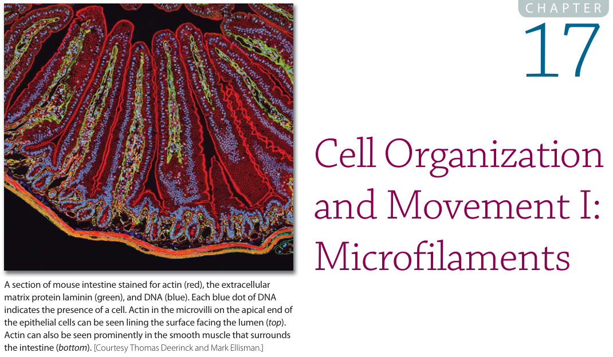
当我们用显微镜观察自然界中细胞的美妙多样性时，能够分辨出的细胞形状与运动的丰富多样令人惊叹。起初我们可能会注意到，有些细胞——例如脊椎动物的精子、四膜虫（Tetrahymena）这样的纤毛虫，或衣藻（Chlamydomonas）这样的鞭毛虫——靠纤毛和鞭毛推进，游动迅速。另一些细胞，如变形虫和人巨噬细胞，运动则较为平缓，它们不是靠外部附属物推进，而是靠细胞自身的协调运动。我们可能还会注意到，组织中的一些细胞彼此附着，形成铺路石样的片层，而另一些细胞——例如神经元——具有可长达3英尺的长突起，并在细胞之间建立选择性的接触。更仔细地观察细胞的内部组织，我们会发现各种细胞器具有特征性的位置；例如高尔基复合体通常靠近中央的细胞核。这种形状、细胞组织和运动能力的多样性是如何实现的？为什么细胞具有独特的形状和清晰的内部组织如此重要？
让我们先来看两个功能和结构迥异的细胞实例。
衬贴于肠道的上皮细胞形成一层由砖块状细胞构成的紧密的铺路石样层，称为上皮（图17-1a, b）。它们的功能是从肠腔将营养物质（如葡萄糖）跨顶端（上部）质膜摄入细胞，再跨基底外侧（底侧）质膜输出至血流。为了完成这种定向运输，上皮细胞的顶端质膜与基底外侧质膜必须具有不同的蛋白质组成。上皮细胞通过细胞连接（见第20章）彼此附着并密封在一起，从而在质膜的顶端结构域与基底外侧结构域之间形成物理屏障。这种分隔使细胞能够把正确的转运蛋白置于两个表面的质膜中。此外，顶端膜具有独特的形态，带有许多称为微绒毛的指状突起，它们增加了可供营养物质吸收的质膜面积。要实现这种组织方式，上皮细胞必须具有内部结构来赋予它们形状，并把合适的蛋白质递送到正确的膜表面。
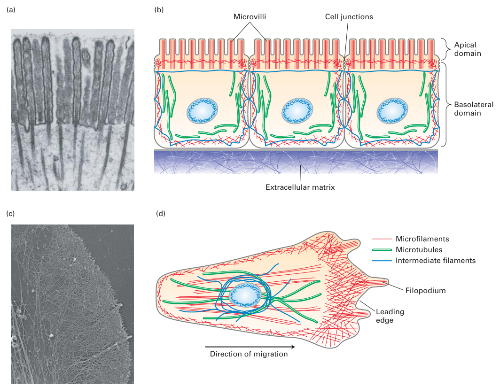
| Apical | 顶端的 |
| Basolateral | 基底外侧的 |
| Extracellular matrix | 细胞外基质 |
| Microvilli | 微绒毛 |
| Cell junctions | 细胞连接 |
| Leading edge | 前缘 |
| Filopodium | 丝状伪足 |
| Microfilaments | 微丝 |
| Microtubules | 微管 |
| Intermediate filaments | 中间丝 |
| Direction of migration | 迁移方向 |
现在来看巨噬细胞，它是一类寻找病原体并通过称为吞噬作用的吞入过程将其消灭的白细胞。细菌释放化学物质吸引巨噬细胞并引导它前往感染部位。巨噬细胞沿着化学梯度前进，蜿蜒转向以接近细菌并吞噬它们，在此过程中它必须不断重组自身的细胞运动装置。
正如我们将看到的，巨噬细胞和其他爬行细胞的内部运动装置，其朝向总是与它们爬行的方向一致（图17-1c, d）。
这只是细胞极性的两个例子：细胞产生功能上不同区域的能力。事实上，当你思考所有类型的细胞时就会意识到，它们大多具有某种形式的细胞极性。细胞极性的另一个基本例子是细胞分裂的能力：细胞必须先选定一条分裂轴，然后建立起沿该轴分配其细胞器的装置。
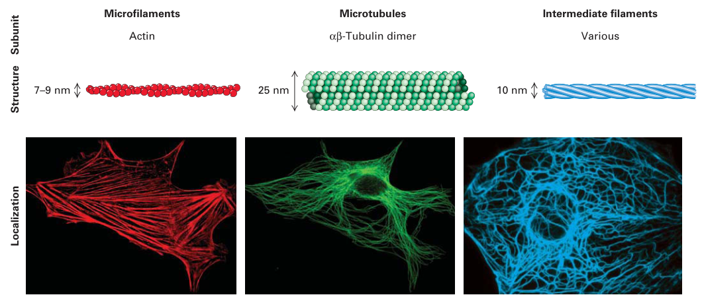
| Microfilaments | 微丝 |
| Actin | 肌动蛋白 |
| Microtubules | 微管 |
| Tubulin dimer | 微管蛋白二聚体 |
| Intermediate filaments | 中间丝 |
| Various | 多种 |
| Subunit | 亚基 |
| Structure | 结构 |
| Localization | 定位 |
细胞的形状、内部组织和功能极性，由一种称为细胞骨架的三维丝状蛋白网络提供。用温和的去垢剂处理细胞，使质膜和内部细胞器溶解、释放出大部分细胞质之后，即可分离并观察细胞骨架（见图17-1c）。细胞骨架遍及整个细胞，并附着于质膜和内部细胞器，从而为细胞组织提供框架。细胞骨架这一术语可能暗示一种像骨骼那样固定的结构。事实上，细胞骨架可以非常动态，其组分能在不到一分钟内完成重组，也可以相当稳定，一次可维持数小时。因此，细胞骨架丝的长度和动态可以有很大差异，它们能被组装成多种不同类型的结构，并且能在细胞中受到局部调控。
细胞骨架由三大丝系统组成，如图17-1b、17-1d以及图17-2所示。每个丝系统都是由组装好的亚基构成的聚合物，在时间和空间上受到组织和调控。构成这些丝的亚基经历受调控的组装与解聚，使细胞能够按需灵活地组装或拆解不同类型的结构。
● 微丝是肌动蛋白这种蛋白质的聚合物，由肌动蛋白结合蛋白组织成有功能的束和网络。微丝在质膜的组织中尤为重要，它赋予微绒毛等表面结构以形状。微丝可以独立行使功能，也可以作为由ATP驱动的肌球蛋白马达蛋白的轨道，这些马达蛋白提供收缩功能（如肌肉中那样），或沿微丝运输货物。
● 微管是由微管蛋白形成的长管，由微管相关蛋白加以组织。它们常常贯穿整个细胞，为相关的细胞器提供组织框架，并为纤毛和鞭毛提供结构支持。微管还构成有丝分裂纺锤体的结构，后者是在有丝分裂时分离已复制染色体的机器。称为驱动蛋白和动力蛋白的马达蛋白沿微管运输货物；与肌球蛋白一样，它们由ATP水解驱动。
● 中间丝是具有组织特异性的丝状结构，行使多种不同的功能，包括为核膜提供结构支持、为组织中的细胞提供结构完整性，以及在皮肤、毛发和指甲中发挥结构与屏障作用。与微丝和微管不同，中间丝不被马达蛋白用作轨道。
如图17-1所示，不同细胞可以构建出彼此迥异的细胞骨架排布。为了建立这些排布，细胞必须感知信号——来自浸浴细胞的可溶性因子、来自相邻细胞或来自细胞外基质的信号——并对其作出解读（图17-3）。这些信号由细胞表面受体检测，后者激活信号转导通路，这些通路最终汇聚到调控细胞骨架组织的因子上。
当细胞骨架组分——或细胞骨架调控——的缺陷引起疾病时，细胞骨架对正常细胞功能和运动的重要性就显而易见了。例如，大约每500人中就有1人存在影响心脏收缩装置的缺陷，从而导致严重程度不等的各种心肌病。许多红细胞疾病会影响支撑这些细胞质膜的细胞骨架组分。转移性癌细胞由于细胞骨架调控失常而表现出不受调控的运动能力，它们脱离原发组织，迁移到新的部位，形成新的失控生长的集落。
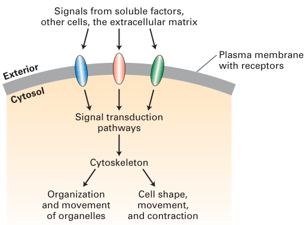
| Signal transduction pathways | 信号转导通路 |
| Cytoskeleton | 细胞骨架 |
| Organization and movement of organelles | 细胞器的组织与运动 |
| Cell shape, movement, and contraction | 细胞形状、运动与收缩 |
| Plasma membrane with receptors | 带有受体的质膜 |
| Cytosol | 细胞质基质 |
| Exterior | 胞外 |
在本章及下一章中，我们讨论细胞骨架的结构、功能与调控。我们会看到细胞如何安排其细胞骨架，以决定细胞形状和极性、为其细胞器提供组织与运动能力，并成为细胞游动和细胞爬行等过程的结构框架。我们讨论细胞如何组装三种不同的丝系统，以及信号转导通路如何在局部和整体上调控这些结构。细胞骨架在细胞周期中如何受到调控将在第19章讨论，它如何参与组织的功能组织则在第20章介绍。本章的重点是微丝和基于肌动蛋白的结构。虽然我们起初分别考察各个细胞骨架系统，但在下一章中我们将会看到，微丝在细胞的正常功能活动中与微管和中间丝相互协作。
17.1 微丝与肌动蛋白结构
微丝在细胞内可以组装成种类繁多的不同结构（图17-4a）。这些多样化的结构各自支撑着特定的细胞功能。
微丝可以作为紧密的丝束，构成细长指状微绒毛的核心；它们也可以以较为无序的网络形式存在于质膜下方，称为细胞皮层，在那里提供支持与组织。在上皮细胞中，微丝在细胞周围形成一条收缩带，即黏着带，它与黏着连接（见第20章）密切关联，为上皮提供强度。在迁移的细胞中，微丝网络位于细胞前部的前缘，即片状伪足处，从中可以伸出称为丝状伪足的丝束。许多细胞具有称为应力纤维的收缩性微丝，它们在细胞迁移时附着到外部基质上（见第20章讨论）。巨噬细胞等特化细胞利用收缩性微丝包吞并内化病原体，病原体随后在胞内被消灭。高度动态、短促爆发的肌动蛋白丝组装，可以驱动内吞囊泡脱离质膜运动。在动物细胞分裂的晚期，当所有细胞器都已复制并分配完毕后，会形成一个收缩环并收缩，产生两个子细胞，这一过程称为胞质分裂。因此，细胞以多种方式利用肌动蛋白丝：发挥结构作用，利用肌动蛋白聚合的力量做功，或作为肌球蛋白马达的轨道。图17-4b的电镜照片显示了微绒毛中的微丝。微丝的不同排布常常共存于同一个细胞中，如图17-4c所示的一个迁移中的成纤维细胞。
微丝的基本构件是肌动蛋白，这种蛋白质具有一种非凡的能力：可逆地组装成两端功能不同的极性丝。随后，肌动蛋白结合蛋白把这些丝塑造成上一段所述的各种结构。微丝这一名称源于电镜工作者在细胞超薄切片中看到的极细的丝，它指聚合形式的肌动蛋白及其相关蛋白。在本节中，我们考察肌动蛋白本身以及它组装成的丝。
肌动蛋白古老、丰富且高度保守
肌动蛋白是真核细胞中一种丰富的胞内蛋白质。例如在肌细胞中，肌动蛋白占细胞总蛋白质重量的10%；即使在非肌细胞中，肌动蛋白也占细胞蛋白质的1–5%。非肌细胞中肌动蛋白的胞质浓度为0.1至0.4 mM；然而在微绒毛等特殊结构中，局部肌动蛋白浓度可高达5 mM。要体会细胞中肌动蛋白的含量之多，可以想一想一个典型的肝细胞：它只有2 × 10^4个胰岛素受体分子，却有大约5 × 10^8个，也就是五亿个肌动蛋白分子。由于细胞骨架蛋白形成的结构横跨细胞内部的大片区域，它们属于细胞中最丰富的一类蛋白质。
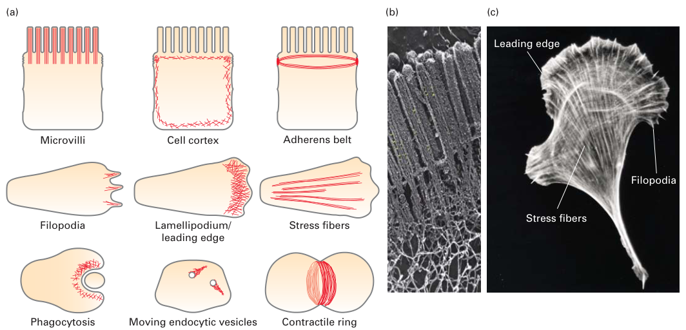
| Microvilli | 微绒毛 |
| Filopodia | 丝状伪足 |
| Cell cortex | 细胞皮层 |
| Adherens belt | 黏着带 |
| Lamellipodium | 片状伪足 |
| Leading edge | 前缘 |
| Stress fibers | 应力纤维 |
| Contractile ring | 收缩环 |
| Moving endocytic vesicles | 移动的内吞囊泡 |
| Phagocytosis | 吞噬作用 |
肌动蛋白由一个庞大的基因家族编码，这些基因产生的蛋白质是物种内和物种间最保守的蛋白质之一。在已进行过研究的例子中，遗传分析表明肌动蛋白在细胞中发挥必不可少的作用。尽管经历了约十亿年的进化，变形虫与动物的肌动蛋白在80%的氨基酸位置上序列完全相同。现代真核生物中发现的多个肌动蛋白基因与一个细菌基因MreB相关，MreB的产物形成的丝在细菌细胞壁合成中具有重要作用。一些单细胞真核生物，如酵母和变形虫，只有一两个祖先型肌动蛋白基因，而多细胞生物往往含有多个肌动蛋白基因。例如，人有六个肌动蛋白基因，有些植物则有六十多个肌动蛋白基因（尽管其中大多数是假基因，不编码有功能的肌动蛋白蛋白）。每个有功能的肌动蛋白基因编码该蛋白的一种不同同种型。肌动蛋白的同种型历史上根据其总体电荷被分为三组：α-肌动蛋白、β-肌动蛋白和γ-肌动蛋白。在脊椎动物中，有四种肌动蛋白同种型存在于特定类型的肌细胞中，另有两种同种型存在于非肌细胞中。这六种同种型在整个蛋白质的375个残基中仅约25个不同，即显示出约93%的同一性。尽管这些差异看似微小，但三类同种型具有不同的功能：α-肌动蛋白与多种收缩性结构相关联，γ-肌动蛋白构成应力纤维中的丝，而β-肌动蛋白富集于运动细胞的细胞皮层和前缘。
球状肌动蛋白（G-actin）单体组装成长的螺旋状纤维状肌动蛋白（F-actin）聚合物
肌动蛋白以称为球状肌动蛋白（G-actin）的球状单体形式存在，也以称为纤维状肌动蛋白（F-actin）的丝状聚合物形式存在，后者是G-actin亚基的线性链。每个肌动蛋白分子都含有一个Mg2+离子，与ATP或ADP结合。事实上，肌动蛋白是一种ATP酶，因为它能把ATP水解为ADP和Pi。肌动蛋白的ATP形式与ADP形式之间相互转换的重要性将在下文讨论。
X射线晶体学分析显示，G-肌动蛋白单体被一个深裂隙分成两个叶（图17-5a）。裂隙底部是ATP酶折叠，即ATP和Mg2+的结合位点，它在结构上与GTP酶分子开关的GTP结合裂隙相似（见图15-5）。裂隙的底面起铰链作用，使两个叶能够相对弯曲。当ATP或ADP结合到G-肌动蛋白上时，核苷酸会影响分子的构象；事实上，没有结合的核苷酸时，G-肌动蛋白会非常迅速地变性。向G-肌动蛋白溶液中加入阳离子——Mg2+、K+或Na+——会诱导G-肌动蛋白聚合成F-肌动蛋白丝。该过程是可逆的：F-肌动蛋白解聚成G-肌动蛋白，当溶液的离子强度降低时。体外形成的F-肌动蛋白丝与细胞中看到的微丝无法区分，表明F-肌动蛋白是微丝的主要成分。
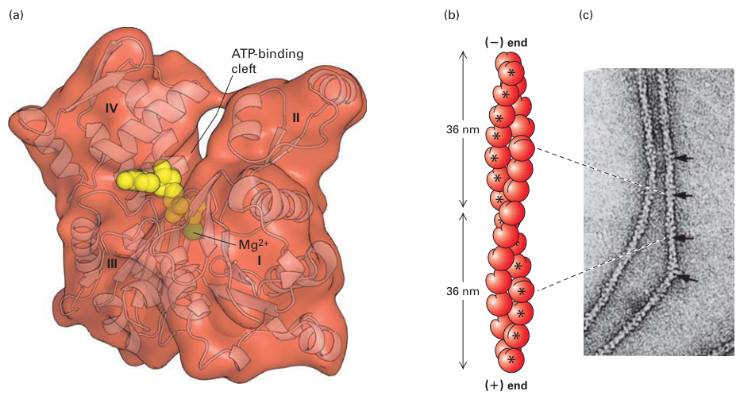
| ATP-binding cleft | ATP结合裂隙 |
| Mg2+ | 镁离子（Mg2+） |
根据肌动蛋白丝的X射线衍射研究结果以及图17-5a所示的肌动蛋白单体结构，科学家们确定，肌动蛋白丝中的亚基以螺旋结构排列（图17-5b）。在这种排列中，可以把丝看成两条相互缠绕的螺旋链。结构中的每个亚基既与同一条链中它上方和下方的一个亚基接触，也与另一条链中的两个亚基接触。单条链中的亚基绕到另一条链的背面，每隔72 nm，即14个肌动蛋白亚基重复一次。由于有两条链，肌动蛋白丝看起来每36 nm重复一次（见图17-5b）。用醋酸铀酰负染后，在电镜下观察F-肌动蛋白，它表现为由念珠状亚基构成的长、柔韧而扭曲的链，其直径在7至9 nm之间变化（图17-5c）。
F-肌动蛋白具有结构极性和功能极性
肌动蛋白丝中的所有亚基都朝向同一方向。这种亚基取向的一个结果是，整条丝表现出极性；也就是说，一端与另一端不同。正如我们将看到的，这种亚基取向的结果是，丝的一端有利于肌动蛋白亚基的加入，被指定为正端（+），而另一端有利于亚基解离，被指定为负端（−）。在(+)端，末端肌动蛋白亚基的ATP结合裂隙与相邻亚基接触，而在(−)端，该裂隙暴露于周围的溶液中（见图17-5b）。
如果没有X射线晶体学提供的原子分辨率，肌动蛋白亚基中的裂隙，因而是丝的极性，是无法检测到的。然而，肌动蛋白丝的极性可以通过电镜的"装饰"实验来证明，这类实验利用了马达蛋白肌球蛋白（见17.5节讨论）能特异性结合肌动蛋白丝的能力。在这类实验中，将含有肌球蛋白肌动蛋白结合头部结构域的过量肌球蛋白S1与肌动蛋白丝混合，并置于允许结合发生的条件下。肌球蛋白以略微倾斜的角度附着在丝的侧面。当所有肌动蛋白亚基都被肌球蛋白结合后，丝看上去被"装饰"上了箭头，这些箭头全都指向丝的一端（图17-6）。
肌球蛋白S1结合并包被F-肌动蛋白的能力在实验上非常有用——它使研究者能够在体外和细胞中鉴定肌动蛋白丝的极性。
箭头指向(−)端，因此(−)端常被称为肌动蛋白丝的"尖端"；(+)端则称为"倒刺端"。由于肌球蛋白结合肌动蛋白丝而不结合微管或中间丝，箭头装饰是在细胞电镜照片中从其他细胞骨架纤维里明确鉴定肌动蛋白丝的一条判据。
17.2 肌动蛋白丝的动态变化
肌动蛋白细胞骨架并不是由肌动蛋白丝束和网络构成的静态、不变的结构。微丝的组装与解聚都受到精细调控。因此，微丝在某些结构中可稳定存在数小时，而在另一些结构中则高度动态，在数秒的时间内伸长或缩短。肌动蛋白丝组织的这些变化可以产生力，从而导致细胞形状发生很大变化，或驱动胞内运动。本节讨论肌动蛋白蛋白本身如何聚合与解聚，这正是细胞中丝具有动态性质的原因。我们将看到，若干肌动蛋白结合蛋白对丝的稳定性和解聚有重要贡献。在下一节中，我们将转向细胞用于组装丝的机制，以及组装位置如何受信号通路调控。
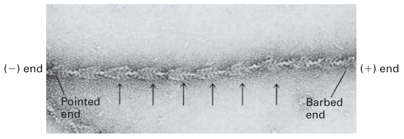
| Pointed end | 尖端 |
| Barbed end | 倒刺端 |
| (+) end | 正端（+） |
| (−) end | 负端（−） |
肌动蛋白的体外聚合分三步进行
G-actin单体在体外聚合成F-actin丝的过程，可以通过黏度测定法、沉降法、荧光光谱法或荧光显微镜来监测（见第4章）。当肌动蛋白丝长得足够长而相互缠结时，溶液的黏度就会升高，黏度是以溶液在黏度计中流速的下降来测量的。沉降法的依据是超速离心（100,000g离心30分钟）能沉降F-actin，但不能沉降G-actin。第三种方法利用共价标记了荧光染料的G-actin；被标记的G-actin单体聚合成F-actin时，其荧光光谱会发生改变。最后，荧光标记的丝的生长可以用荧光视频显微镜成像。这些方法可用于肌动蛋白聚合的动力学研究，也可用于表征肌动蛋白结合蛋白，以确定它们如何影响肌动蛋白的动态变化，或如何交联肌动蛋白丝。
肌动蛋白组装的机制已被广泛研究。值得注意的是，人们可以在很高的蛋白浓度下纯化G-actin而不使其形成丝——只要把它保持在含有ATP和低水平阳离子的缓冲液中即可。然而，正如我们前面所见，如果提高阳离子浓度（例如提高到100 mM K+和2 mM Mg2+），G-actin就会聚合，而反应动力学取决于G-actin的起始浓度。纯G-actin在体外的聚合按三个连续的阶段进行（图17-7a）：1. 成核期的标志是一段滞后期，在此期间G-actin亚基结合成由两三个亚基组成的寡聚体。当寡聚体达到三个亚基的长度时，它就可以充当下一阶段的种子或核。
2. 在延伸期，短的寡聚体通过在其两端添加肌动蛋白单体而迅速增长。随着F-actin丝的生长，G-actin单体的浓度不断下降，直到丝端与单体之间达到平衡，进入稳态。
3. 在稳态期，G-actin单体与丝端的亚基发生交换，但丝的总长度没有净变化。
图17-7b、c中的动力学曲线显示了聚合各阶段中丝的质量。在图17-7c中我们看到滞后期是由成核造成的，因为向G-actin溶液中加入少量由极短的丝组成的F-actin核即可将它消除。
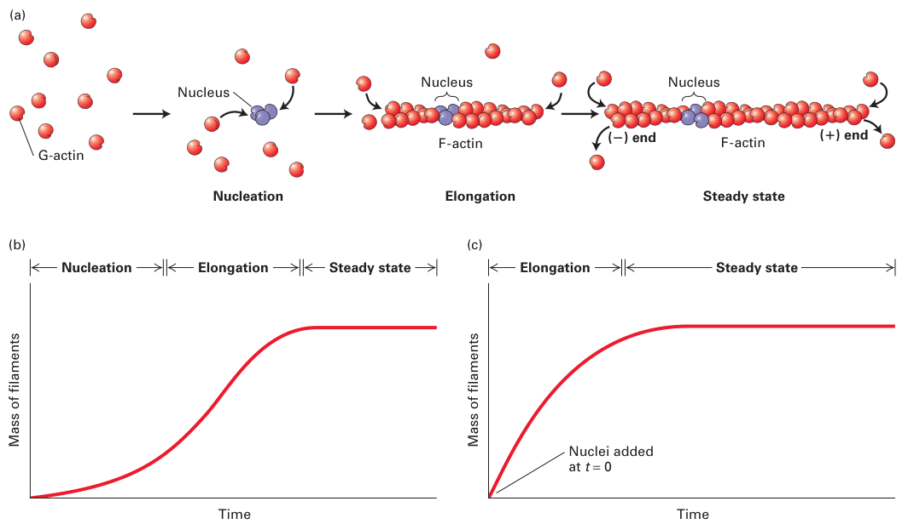
| G-actin | 球状肌动蛋白（G-actin） |
| F-actin | 纤维状肌动蛋白（F-actin） |
| Nucleus | 核 |
| Nucleation | 成核 |
| Elongation | 延伸 |
| Steady state | 稳态 |
| Mass of filaments | 丝的质量 |
| Time | 时间 |
| Nuclei added at t = 0 | 在t=0时加入的核 |
自发组装成丝需要多少G-actin？科学家们把不同浓度的G-actin置于聚合条件下，发现低于某一浓度时丝不能组装（图17-8）。高于这一浓度时，丝开始形成；当达到稳态时，更多游离亚基的掺入与亚基从丝端的解离相平衡，从而得到丝与单体的混合物。形成丝所需的这一浓度被称为总体临界浓度（Cc）。低于Cc时不会形成丝；高于Cc时则会形成丝。在稳态下，单体肌动蛋白的浓度保持在临界浓度（见图17-8）。
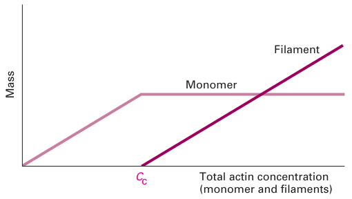
| Total actin concentration (monomer and filaments) | 总肌动蛋白浓度（单体与丝） |
| Filament | 丝 |
| Monomer | 单体 |
| Mass | 质量 |
| Cc | 临界浓度（Cc） |
肌动蛋白丝在(+)端的生长快于(−)端
我们前面看到，肌球蛋白S1装饰实验揭示了F-actin固有的结构极性，这种极性源于丝中亚基取向的一致性（见图17-6）。如果把游离ATP–G-actin加到预先存在的经肌球蛋白装饰的丝上，两端会以非常不同的速率生长（图17-9）。事实上，ATP–G-actin在(+)端的添加速率几乎比在(−)端快10倍。添加速率当然取决于游离ATP–G-actin的浓度。动力学实验显示，添加速率在(+)端约为12 μM−1 s−1，在(−)端约为1.3 μM−1 s−1（图17-10a）。这意味着，如果把1 μM游离ATP–G-actin加到预先形成的丝上，平均每秒会有12个亚基加到(+)端，而只有1.3个亚基会被加到(−)端。那么从每一端丢失亚基的速率又如何呢？相比之下，ATP–G-actin亚基从两端解离的速率相当接近，从(+)端约为1.4 s−1，从(−)端约为0.8 s−1。由于这种解离不过是亚基离开丝端的速率，所以它不依赖于游离ATP–G-actin的浓度。
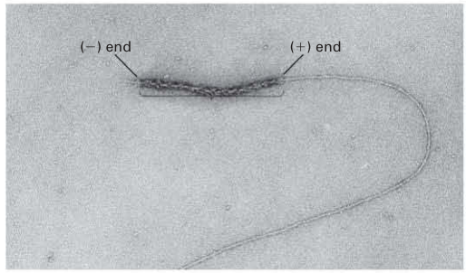
| (+) end | 正端（+） |
| (−) end | 负端（−） |
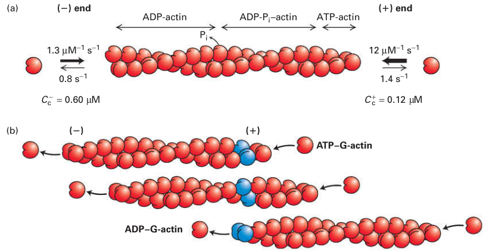
| (+) end | 正端（+） |
| (−) end | 负端（−） |
| ATP–G-actin | ATP–G-actin |
| ADP–G-actin | ADP–G-actin |
| ATP-actin | ATP-肌动蛋白 |
| ADP-Pi–actin | ADP-Pi–肌动蛋白 |
| ADP-actin | ADP-肌动蛋白 |
| Pi | Pi |
这些缔合与解离速率对肌动蛋白的动态变化意味着什么？首先，我们只考虑一端，即(+)端。如上所述，亚基的添加速率取决于游离ATP–G-actin的浓度，而亚基的丢失速率则不然。因此，在高游离ATP–G-actin浓度下亚基会被添加；但随着浓度降低，终将达到一点，在该点上添加速率与丢失速率相平衡，该端不再有净生长。这个点称为(+)端的临界浓度C+c，我们可以通过令组装速率等于解聚速率来计算它。因此在临界浓度下，组装速率就是C+c乘以测得的添加速率12 μM−1 s−1（C+c 12 s−1），而解聚速率与游离肌动蛋白浓度无关，即1.4 s−1。令这两个速率相等即得C+c = 1.4 s−1/12 μM−1 s−1，即0.12 μM，这是(+)端的结果。高于这一游离ATP–G-actin浓度时，亚基被加到(+)端并发生净生长；低于它时，亚基净丢失，发生缩短。
现在让我们只考虑(−)端。由于添加速率低得多，为1.3 μM−1 s−1，而解离速率却大致相同，为0.8 s−1，我们预期临界浓度C−c在(−)端会高于C+c。
事实上，正如我们在(+)端所做的那样，我们可以算出C−c约为0.8 s−1/1.3 μM−1 s−1，即0.6 μM。因此，当游离ATP–G-actin低于0.6 μM时——比如0.3 μM——(−)端会丢失亚基。但请注意，在这一浓度下(+)端仍会生长，因为0.3 μM高于C+c。由于两端的临界浓度不同，在稳态下游离ATP–G-actin将介于C+c与C−c之间，因此(+)端会生长，而(−)端会丢失亚基。这种现象称为踏车运动，因为特定的亚基——例如图17-10b中显示为蓝色的那些——似乎穿过了整条丝。
肌动蛋白丝的踏车运动由ATP水解提供动力。当ATP–G-actin结合到(+)端时，ATP被水解为ADP和Pi。Pi从丝中的亚基上缓慢释放，于是丝变得不对称：(+)端是ATP-肌动蛋白亚基，接着是一段含ADP-Pi–肌动蛋白的区域，而在Pi释放之后，靠近(−)端的则是ADP-肌动蛋白亚基（见图17-10a）。在ATP水解以及随后Pi从丝中亚基释放的过程中，肌动蛋白发生构象变化，这种变化正是两端缔合与解离速率不同的原因。这里我们只考虑了ATP–G-actin的动力学，但实际上从(−)端解离的是ADP–G-actin。我们的分析还依赖于ATP–G-actin的充足供应，正如我们将看到的，在体内情况正是如此。因此，肌动蛋白可以利用ATP水解产生的能量进行踏车运动，而踏车运动的丝在体内可以做功，这一点我们后面会看到。
丝中ATP-肌动蛋白、ADP-Pi-肌动蛋白和ADP-肌动蛋白的量是如何决定的？肌动蛋白的ATP酶活性和Pi释放都很慢，因此当肌动蛋白组装速率提高时，(+)端ATP-肌动蛋白的量也会增加。正如我们将在下一节看到的，细胞有机制来调节丝的组装和解聚，从而调节丝上核苷酸的分布。
肌动蛋白丝的踏车运动被前纤维蛋白和切丝蛋白加速
对体内肌动蛋白踏车速率的测定表明，它可以比纯肌动蛋白在体外生理条件下所能达到的速率高好几倍。与踏车模型一致，体内肌动蛋白丝的生长只发生在(+)端。那么，加速的踏车运动是如何实现的？细胞又如何把从(−)端解离下来的ADP-肌动蛋白重新装载成ATP-肌动蛋白，以供在(+)端组装？有两种不同的肌动蛋白结合蛋白对这两个过程有重要贡献。
第一种蛋白是前纤维蛋白（profilin），这是一种小蛋白，它结合在G-actin上与核苷酸结合裂隙相对的一侧。当前纤维蛋白结合ADP-肌动蛋白时，它会使裂隙张开，并大大促进ADP的释放，释放出的ADP被细胞中含量更丰富的ATP所取代，从而形成前纤维蛋白–ATP-肌动蛋白复合物。该复合物不能结合到(−)端，因为前纤维蛋白封闭了G-actin上供(−)端组装的位点。
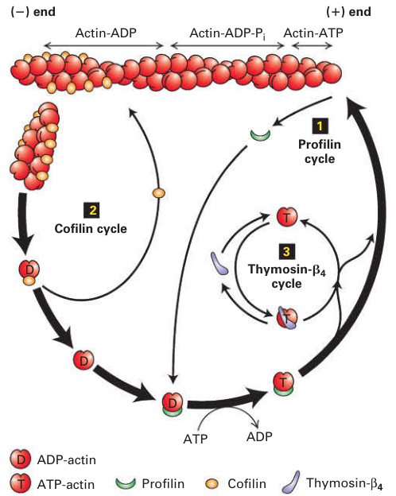
| Profilin | 前纤维蛋白 |
| Cofilin | 切丝蛋白 |
| Thymosin-β4 | 胸腺素β4 |
| Actin-ATP | 肌动蛋白-ATP |
| ATP-actin | ATP-肌动蛋白 |
| ADP-actin | ADP-肌动蛋白 |
| Actin-ADP-Pi | 肌动蛋白-ADP-Pi |
| Actin-ADP | 肌动蛋白-ADP |
| ATP | ATP |
| ADP | ADP |
| Profilin cycle | 前纤维蛋白循环 |
| Cofilin cycle | 切丝蛋白循环 |
| Thymosin-β4 cycle | 胸腺素β4循环 |
| (+) end | 正端（+） |
| (−) end | 负端（−） |
然而，前纤维蛋白–ATP-肌动蛋白复合物能够高效地结合到(+)端，而且在新亚基结合之后前纤维蛋白便解离下来（图17-11）。前纤维蛋白的这一功能本身并不提高踏车速率，但它确实从释放出来的ADP-肌动蛋白提供ATP-肌动蛋白的供应；因此，细胞中几乎所有游离G-actin都结合着ATP。
前纤维蛋白还有另一个重要性质：它在结合肌动蛋白的同时，还能结合那些序列富含脯氨酸残基的其他蛋白。我们稍后会看到这一性质在肌动蛋白丝组装中如何发挥作用。
切丝蛋白（cofilin）是另一种参与肌动蛋白踏车运动的小蛋白，但它特异性地结合那些亚基含ADP的F-actin，这些亚基是丝中靠近(−)端的较老的亚基（见图17-10a）。切丝蛋白的作用方式是桥接两个肌动蛋白单体，并诱导丝的扭曲发生微小变化。这一微小的扭曲使丝变得不稳定，将它断裂成短片段。通过这种方式断开丝，切丝蛋白产生了多得多的游离(−)端，从而大大增强了丝的净解聚（见图17-11）。释放出来的ADP-肌动蛋白亚基随后被前纤维蛋白重新装载，并如上所述加到(+)端。这样，前纤维蛋白和切丝蛋白可以在体外把踏车运动提高十倍以上，达到体内所见到的水平。正如可以预料的那样，细胞利用信号转导通路来调节前纤维蛋白和切丝蛋白，从而调节肌动蛋白丝的周转。
胸腺素β4为聚合提供肌动蛋白储库
早就知道，细胞中常常有非常大的未聚合肌动蛋白库，有时多达细胞中肌动蛋白总量的一半。由于细胞中肌动蛋白的水平可高达100–400 μM，这意味着细胞中未聚合的肌动蛋白可多达50–200 μM。既然体外临界浓度约为0.2 μM，为什么这些肌动蛋白没有全部聚合呢？答案至少部分在于肌动蛋白单体隔离蛋白的存在。其中之一就是胸腺素β4，这种小蛋白与ATP–G-actin结合的方式会抑制肌动蛋白亚基加到丝的两端。胸腺素β4可以非常丰富，例如在人血小板中就是这样。这些盘状的细胞碎片在血液中非常丰富，当它们在血液凝固过程中被激活时，会经历一阵爆发性的肌动蛋白组装。血小板富含肌动蛋白：据估计其总浓度约为550 μM，其中约220 μM以未聚合形式存在。它们还含有约500 μM胸腺素β4，后者隔离了大部分游离肌动蛋白。然而，如同任何蛋白质-蛋白质相互作用一样，游离肌动蛋白和游离胸腺素β4处于与肌动蛋白–胸腺素β4的动态平衡之中。如果一部分游离肌动蛋白被用于聚合，就会有更多的肌动蛋白–胸腺素β4解离，提供更多游离肌动蛋白用于聚合（见图17-11）。因此，胸腺素β4充当未聚合肌动蛋白的缓冲剂，在需要时使其可供利用。
加帽蛋白阻断肌动蛋白丝两端的组装和解聚
细胞中肌动蛋白丝的踏车运动和动态变化还受到加帽蛋白的进一步调节，这类蛋白特异性地结合在丝的末端。如果不是这样，肌动蛋白丝就会不受控制地不断生长和解聚。正如人们可能预料的，已经发现了两类蛋白：一类结合(+)端，另一类结合(−)端（图17-12）。
一种称为CapZ的蛋白由两个密切相关的亚基组成，它以非常高的亲和力（约0.1 nM）结合到肌动蛋白丝的(+)端，从而抑制亚基的添加或丢失。细胞中CapZ的浓度通常足以迅速给任何新形成的(+)端加帽。那么丝如何在它们的(+)端生长呢？至少有两种机制调节CapZ的活性。第一，CapZ的加帽活性受到调节性磷脂磷脂酰肌醇4,5-二磷酸[PI(4,5)P2]的抑制，这种磷脂存在于质膜中（见第16章）。第二，最近的工作表明，某些调节蛋白能够结合(+)端并保护它免受CapZ的作用，同时仍允许在该处进行组装。因此，细胞演化出了一套精巧的机制，除了在需要组装的时间和地点之外，阻断肌动蛋白丝在(+)端的组装。
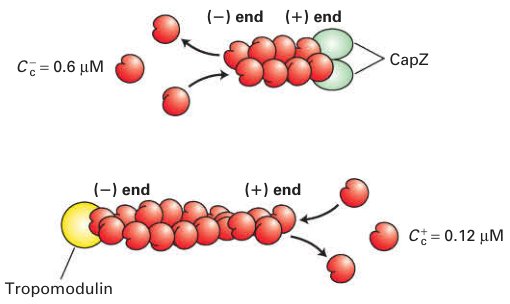
| Tropomodulin | 原肌球调节蛋白 |
| CapZ | CapZ |
| (+) end | 正端（+） |
| (−) end | 负端（−） |
另一种称为原肌球调节蛋白（tropomodulin）的蛋白结合到肌动蛋白丝的(−)端，同样抑制其组装和解聚。这种蛋白主要存在于需要高度稳定肌动蛋白丝的细胞中。本章后面我们将遇到的两个此类丝的例子是：红细胞皮层中的短肌动蛋白丝和肌肉中的肌动蛋白丝。在这两种情况下，原肌球调节蛋白都与另一种沿丝分布的蛋白——原肌球蛋白——协同作用来稳定丝。原肌球调节蛋白在(−)端同时结合原肌球蛋白和肌动蛋白，从而大大稳定丝。
除CapZ之外，还有另一类蛋白可以给肌动蛋白丝的(+)端加帽。这些蛋白还能切断肌动蛋白丝。该家族的一个成员——凝溶胶蛋白（gelsolin）——受Ca2+离子浓度调节。结合Ca2+后，凝溶胶蛋白发生构象变化，使它能够结合到肌动蛋白丝的侧面，然后插入螺旋的亚基之间，从而断开丝。随后它仍保持结合并使(+)端加帽，产生一个能够解聚的新(−)端。正如我们将在后面一节讨论的，肌动蛋白交联蛋白可以在单个肌动蛋白丝之间提供连接，把F-actin溶液变成凝胶。如果向这样的凝胶中加入凝溶胶蛋白并提高Ca2+水平，凝溶胶蛋白就会切断肌动蛋白丝，使凝胶重新变成液态溶液。这种把凝胶变成溶胶的能力，正是该蛋白被命名为gelsolin的原因。
- 肌动蛋白丝组装中的限速步骤是形成短的肌动蛋白寡聚体（核），随后它可以被延伸成丝。
- 临界浓度（Cc）是游离G-actin的一种浓度，在该浓度下单体加到丝端的量与从该端丢失的量相平衡。
- 当G-actin浓度高于Cc时，丝端会生长；低于Cc时，丝会缩短（见图17-8）。
- ATP–G-actin在(+)端的添加比在(−)端快得多，导致(+)端的临界浓度低于(−)端。
- 在稳态下，肌动蛋白亚基以踏车方式穿过丝。ATP-肌动蛋白在(+)端加入，ATP随后被水解为ADP和Pi，Pi丢失，ADP-肌动蛋白从(−)端解离。
- 肌动蛋白丝的长度和周转速率由专门的肌动蛋白结合蛋白调节（见图17-11）。前纤维蛋白促进G-actin上ADP与ATP的交换；切丝蛋白加快ADP-肌动蛋白从丝(−)端的丢失速率；胸腺素β4结合G-actin，在需要时提供储备的肌动蛋白。加帽蛋白结合到丝端，阻断组装和解聚。
17.3 肌动蛋白丝组装的机制
肌动蛋白聚合的限速步骤是形成最初的核心（成核），丝从此处长出（见图17-7a）。在细胞中，这一步骤被用作控制点，决定肌动蛋白丝在何处组装、以及产生哪些类型的肌动蛋白结构（见图17-1和图17-4）。两类主要的肌动蛋白成核蛋白——形成蛋白（formin）家族和Arp2/3复合物——在信号转导通路的控制下使肌动蛋白组装成核。此外，它们使不同肌动蛋白结构的组装成核：形成蛋白导致长肌动蛋白丝的组装，而Arp2/3复合物导致分支网络的形成。这里我们分别讨论二者，并了解肌动蛋白聚合的力量如何驱动细胞中的运动过程。随后我们还会简要介绍近来发现的新型专门化肌动蛋白成核因子。
形成蛋白组装无分支丝
形成蛋白存在于几乎所有真核细胞中，是一个多样化的蛋白家族：7个不同的类别存在于脊椎动物中。尽管它们多种多样，但所有形成蛋白家族成员都有两个共同的相邻结构域，即所谓的FH1和FH2结构域（形成蛋白同源结构域1和2）。来自两个形成蛋白单体的两个FH2结构域结合，形成一个甜甜圈形状的复合物（图17-13a）。该复合物能够通过结合两个肌动蛋白亚基来使肌动蛋白组装成核，它将这两个亚基固定住，使新生丝的(+)端正对着FH2结构域。现在丝可以在(+)端生长，而FH2结构域二聚体仍附着在它上面。这怎么可能呢？正如我们前面所见，肌动蛋白丝可以看作两条相互缠绕的亚基链。FH2二聚体可以结合到两个末端亚基上。随后它可能在这两个末端亚基之间来回摆动，先松开其中一个以便加入新的亚基，然后结合新加入的亚基，并腾出空间让另一个亚基加到另一条链上。这样，通过在末端的两个亚基之间摆动，它既能保持附着，同时又允许(+)端生长（见图17-13a）。
与FH2结构域相邻的FH1结构域也对肌动蛋白丝的生长有重要贡献（图17-14）。该结构域富含脯氨酸残基，它们作为若干个前纤维蛋白（profilin）分子的结合位点。我们前面讨论过前纤维蛋白如何将G-actin上的ADP核苷酸交换为ATP，生成前纤维蛋白–ATP–肌动蛋白。FH1结构域充当前纤维蛋白–ATP–G-actin的停靠位点，以提高这些复合物的局部浓度。随后，这些前纤维蛋白-肌动蛋白复合物中的肌动蛋白被送入FH2结构域，加到丝的(+)端，前纤维蛋白被释放（见图17-14）。由于形成蛋白允许肌动蛋白亚基快速加到(+)端，于是产生了(+)端带有一个形成蛋白的长丝（图17-13b）。通过这种方式，形成蛋白不仅能成核肌动蛋白组装，还具有一种非凡的能力：既保持结合在(+)端，同时又允许该处快速组装。为确保丝持续生长，形成蛋白结合(+)端的方式排除了(+)端加帽蛋白（如CapZ）的结合，否则这类蛋白通常会终止组装。
要对细胞有用，形成蛋白的活性必须受到调控。许多形成蛋白由于蛋白前半部分与其C端尾部之间的相互作用而处于折叠的、无活性的构象。这些形成蛋白被膜结合的Rho-GTP激活，后者是一种与Ras相关的小GTP酶（在17.7节讨论）。当Rho从其无活性的Rho-GDP形式转变为被激活的膜结合Rho-GTP状态时，它就能结合并激活这些形成蛋白（见图17-14）。
最近的研究表明，形成蛋白负责组装长肌动蛋白丝，例如肌肉细胞、应力纤维、丝状伪足中以及胞质分裂期间形成的收缩环中的那些长丝（见图17-4）。形成蛋白的肌动蛋白成核作用直到最近才被发现，因此这个多样化蛋白家族所扮演的角色现在才刚刚被揭示。由于动物中有许多不同的形成蛋白类别，很可能还会发现形成蛋白组装其他基于肌动蛋白的结构。
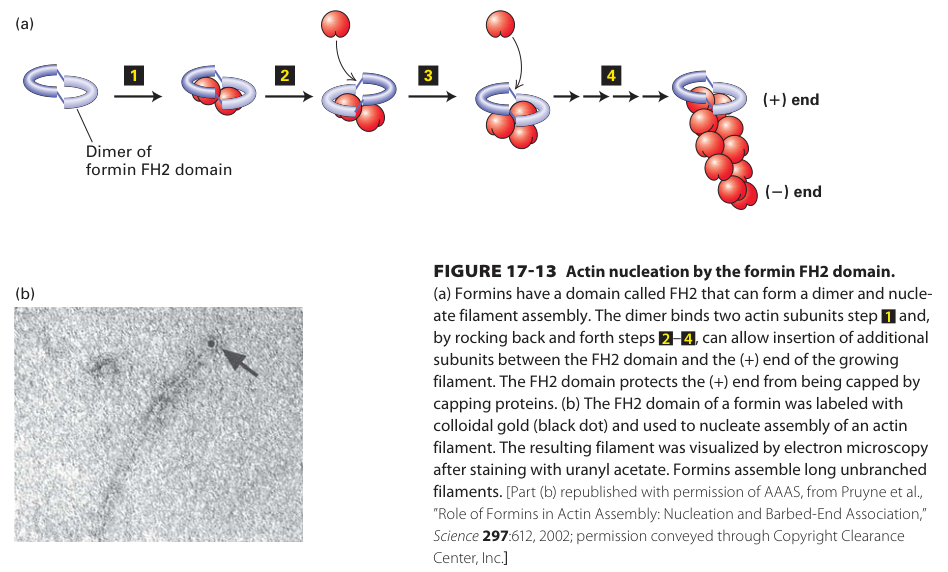
| Dimer of formin FH2 domain | 形成蛋白FH2结构域二聚体 |
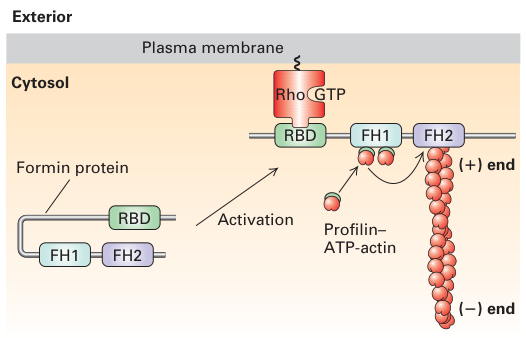
| Plasma membrane | 质膜 |
| Profilin–ATP-actin | 前纤维蛋白–ATP–肌动蛋白 |
| FH2 | FH2结构域 |
| FH1 | FH1结构域 |
| RBD | Rho结合结构域（RBD） |
| Activation | 激活 |
| Formin protein | 形成蛋白 |
| Exterior | 外部 |
| Cytosol | 细胞质 |
| Rho | Rho |
| GTP | GTP |
Arp2/3复合物使分支丝的组装成核
Arp2/3复合物是一台由7个亚基组成的蛋白机器，其中两个是肌动蛋白相关蛋白（Arp），这也解释了它的名称（图17-15a）。它存在于几乎所有真核生物中，包括植物、酵母和动物细胞。单独的Arp2/3复合物是很差的成核因子。要使分支肌动蛋白的组装成核，Arp2/3除了需要与已有肌动蛋白丝的侧面结合外，还需要通过与成核促进因子（NPF）相互作用而被激活。尽管NPF种类繁多，但主要的NPF家族的特征是含有一个称为WCA（WH2、连接区、酸性）的区域。实验表明，如果将WCA结构域与预先形成的肌动蛋白丝一起加入肌动蛋白组装反应体系，Arp2/3就会成为进一步肌动蛋白组装的强效成核因子。
Arp2/3复合物和NPF如何使肌动蛋白丝的组装成核？两个NPF各在其WH2结构域结合一个肌动蛋白亚基，它们共同通过与Arp2/3复合物的连接区和酸性结构域的相互作用来激活该复合物。在无活性的Arp2/3复合物中，两条肌动蛋白相关多肽——Arp2和Arp3——处于无法使丝组装成核的错误构型（见图17-15b第2步）。当被NPF激活时，Arp2和Arp3移动到正确的构型，复合物随后结合到已有肌动蛋白丝的侧面。由NPF的WH2结构域带入的肌动蛋白亚基结合到Arp2/3模板上，在(+)端使丝组装成核（图17-15b）。NPF被释放，随后只要ATP–G-actin可用，新的(+)端就会生长，直到被(+)端加帽蛋白（如CapZ）加帽为止。原有丝与新丝之间的夹角为70°（图17-15c）。这也是在运动细胞前缘的分支丝中实验观察到的角度，人们认为这些分支丝是由被激活的Arp2/3复合物的作用形成的（图17-15d）。正如我们在后续小节中讨论的，Arp2/3复合物可被用来驱动肌动蛋白聚合，从而为细胞内运动提供动力。
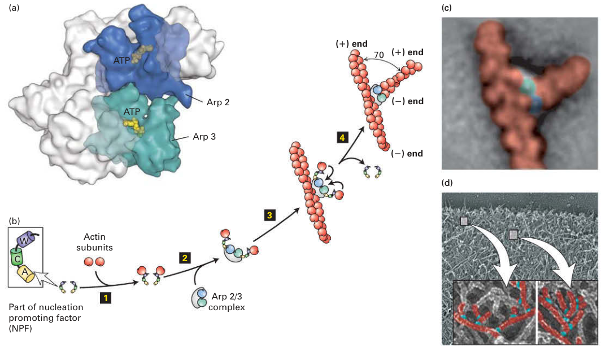
| Arp2/3 complex | Arp2/3复合物 |
| Actin subunits | 肌动蛋白亚基 |
| Arp2 | Arp2 |
| Arp3 | Arp3 |
| ATP | ATP |
| nucleation promoting factor (NPF) | 成核促进因子（NPF） |
Arp2/3复合物催化的肌动蛋白成核受到精细调控，NPF正是这一调控过程的一部分。有一种NPF称为WASp，因为它在Wiskott-Aldrich综合征患者中存在缺陷，这是一种X连锁疾病，特征是湿疹、血小板计数低和免疫缺陷。WASp以一种折叠的无活性构象存在，使WCA结构域无法被利用（图17-16）。这种蛋白只在质膜上被激活很重要，其激活需要两个信号。一个信号是调节性磷脂PI(4,5)P2的存在，它特征性地富集于质膜中（第16章）。WASp通过其碱性结构域结合PI(4,5)P2。第二个信号是小GTP结合蛋白Cdc42的活化形式的结合，Cdc42本身则是响应信号通路而被激活的（在17.7节讨论）。这种双信号输入称为符合检测（coincidence detection），它确保该蛋白只在正确的位置——质膜上——并被正确的信号通路激活。一旦结合了这两个输入信号，WASp就被打开，WCA结构域变得可接近。
另一种重要的NPF是称为WAVE的大型蛋白复合物，它也有一个能激活Arp2/3复合物的WCA结构域。WAVE也是通过与酸性磷脂以及另一种小GTP结合蛋白Rac1的活化形式的结合而被激活的。正如我们在17.7节所讨论的，Cdc42通过WASp、Rac1通过WAVE激活Arp2/3复合物，可诱导形成不同的基于微丝的结构。
尽管形成蛋白和Arp2/3复合物存在于真菌、植物和动物中，近来在动物细胞中还发现了其他的肌动蛋白成核因子。其中之一称为Spire，它有4个串联的WH2结构域，因此可以结合4个肌动蛋白单体。它以一种允许这些肌动蛋白组装成丝的方式进行结合，不过其详细机制仍有待阐明。鉴于肌动蛋白丝在细胞中执行如此多的功能，近来又发现了其他NPF蛋白和肌动蛋白成核因子也就不足为奇了。
细胞内运动可由肌动蛋白聚合提供动力
肌动蛋白聚合如何被利用来做功？正如我们所见，肌动蛋白聚合涉及肌动蛋白-ATP水解为肌动蛋白-ADP，这使得肌动蛋白优先在(+)端生长、在(−)端解聚。如果一条肌动蛋白丝固定在细胞骨架网络中，而你能结合上去并"搭乘"正在组装的(+)端，你就会被运送到细胞的另一处。胞内细菌寄生菌单核细胞增生李斯特菌（Listeria monocytogenes）正是这样在细胞内四处移动的。事实上，对李斯特菌运动的研究正是发现Arp2/3蛋白成核活性的途径。稍后我们将看到，李斯特菌劫持了正常的细胞运动过程为其自身所用。我们先讨论李斯特菌，因为它目前比采用类似机制的正常过程了解得清楚得多。
李斯特菌是一种食源性病原体，在大多数成年人中引起轻微的胃肠道症状，但对老年人或免疫功能低下者可能致命。它进入动物细胞并在细胞质中分裂。为了从一个宿主细胞移动到另一个宿主细胞，它通过在细胞中聚合肌动蛋白形成一条彗尾来移动，就像火箭后面的尾焰一样（图17-17a、b）；当它撞到质膜时，便挤入相邻细胞并感染它。为此，它需要在其后端局部引导宿主细胞肌动蛋白的组装，同时把组装限制在该处，以便高效地将细菌向前推进。它是如何做到的呢？李斯特菌表面有一种称为ActA的蛋白，它通过具有一个肌动蛋白结合位点和一个能高效激活Arp2/3复合物的酸性区域来模拟NPF（图17-17c）。ActA蛋白还结合一种称为VASP的宿主蛋白，后者有三个重要特性。第一，VASP有一个富含脯氨酸的区域，能结合前纤维蛋白–ATP–肌动蛋白，从而增强ATP–肌动蛋白向Arp2/3复合物产生的新的倒刺端组装。第二，它能抓住新形成丝的末端。第三，它能保护生长丝的(+)端不被CapZ加帽。这些特性使VASP能够增强肌动蛋白组装并将其限制在细菌的后部。随后组装中的丝推动细菌。由于这些丝嵌入细胞中静止的细胞骨架基质里，李斯特菌就被推向前方，走在聚合的肌动蛋白前面。研究人员用纯化的蛋白在试管中重构了李斯特菌的运动，以了解李斯特菌运动的最低需求是什么。值得注意的是，只需加入四种蛋白细菌就能移动：ATP–G-actin、Arp2/3复合物、CapZ和切丝蛋白（cofilin）（见图17-17b、c）。我们已经讨论了肌动蛋白和Arp2/3的作用，但为什么需要CapZ和切丝蛋白呢？正如我们前面所见，CapZ会迅速给肌动蛋白丝的游离(+)端加帽，因此当一条生长中的丝不再为细菌运动做贡献时，它就会迅速被加帽并被抑制进一步延伸。这样，组装主要发生在细菌附近，即ActA刺激Arp2/3复合物之处。切丝蛋白是加速肌动蛋白丝(−)端解聚所必需的，它再生出游离肌动蛋白，使聚合循环得以持续（见图17-11）。这一最小的运动速率可因其他蛋白（如上面提到的VASP和前纤维蛋白）的存在而提高。
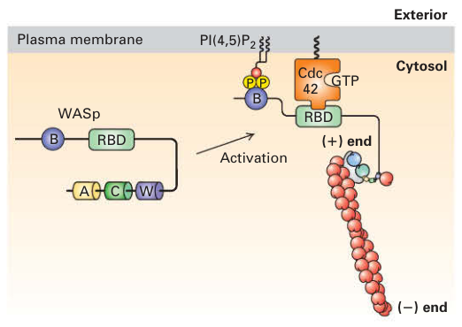
| Exterior | 外部 |
| Cytosol | 细胞质 |
| GTP | GTP |
| Cdc42 | Cdc42 |
| Plasma membrane | 质膜 |
| RBD | Rho结合结构域（RBD） |
| Activation | 激活 |
| PI(4,5)P2 | PI(4,5)P2 |
| WASp | WASp |
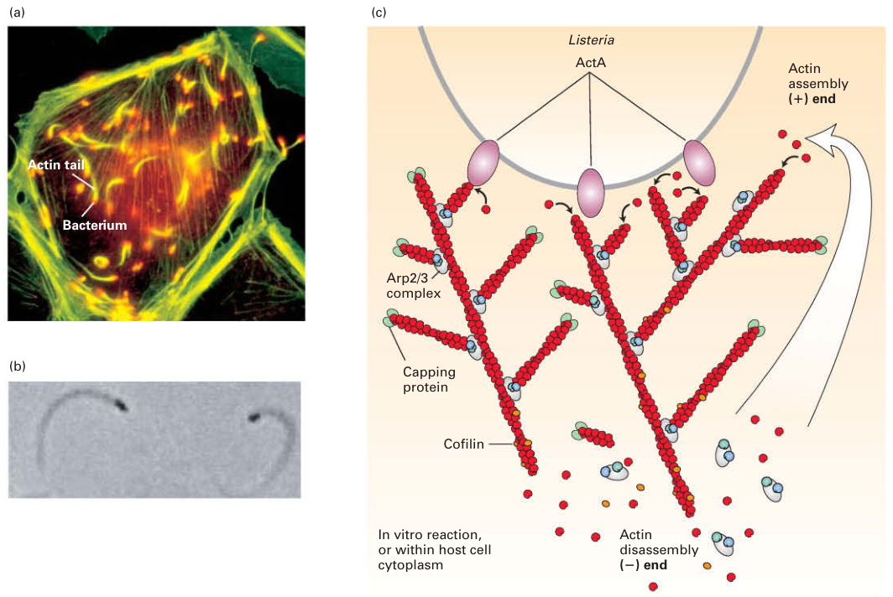
| Actin tail | 肌动蛋白尾 |
| Bacterium | 细菌 |
| Cofilin | 切丝蛋白（cofilin） |
| Capping protein | 加帽蛋白 |
| Arp2/3 complex | Arp2/3复合物 |
| Actin assembly | 肌动蛋白组装 |
| Actin disassembly | 肌动蛋白解聚 |
| ActA | ActA |
为了在细胞内移动，李斯特菌以及其他机会致病菌（如引起痢疾的志贺菌属）劫持了一个参与细胞运动的正常、受调控的细胞过程。正如我们稍后将更详细讨论的（17.7节），运动细胞在细胞前端有一薄层细胞质，称为前缘（见图17-1c、17-4和17-15d）。这薄层细胞质由密集的肌动蛋白丝网络组成，这些丝在细胞前端不断延伸，把膜向前推。前缘膜中的因子激活Arp2/3复合物，使这些丝成核。
因此，肌动蛋白组装的力量推动膜向前，从而参与细胞运动。
微丝在内吞中发挥作用
正如我们在第14章所见，内吞是细胞从外部介质中摄取颗粒、分子或液体所用的过程，方式是将其包裹在质膜中然后内化。分子或液体的摄取称为受体介导的内吞或液相内吞，而大颗粒的摄取称为吞噬作用（"细胞进食"）。微丝参与这两个过程。
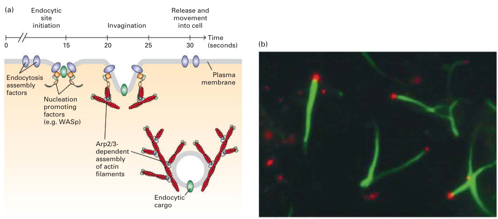
| Time (seconds) | 时间（秒） |
| Plasma membrane | 质膜 |
| Release and movement into cell | 释放并移入细胞 |
| Endocytic site initiation | 内吞位点起始 |
| Nucleation promoting factors (e.g. WASp) | 成核促进因子（如WASp） |
| Arp2/3-dependent assembly of actin filaments | Arp2/3依赖性的肌动蛋白丝组装 |
| Endocytic cargo | 内吞货物 |
| Endocytosis assembly factors | 内吞组装因子 |
| Invagination | 内陷 |
液相内吞是一个组织化程度非常高的过程，最近的研究表明，肌动蛋白组装的力量对这一机制有贡献。内吞组装因子招募NPF，使得当内吞囊泡内陷并从膜上掐断时，它们被驱入细胞质，其动力来自一次由Arp2/3复合物驱动的、快速且非常短暂（持续几秒）的肌动蛋白聚合爆发（图17-18a）。这种基于肌动蛋白的内吞囊泡运动可在体外重构（图17-18b），其机制与前缘形成和李斯特菌运动非常相似。
吞噬作用是白细胞（白血球）识别和清除病原体（如细菌）的重要过程。免疫系统将细菌识别为异物，并产生能识别其表面成分的抗体。正如我们在第3章所讨论的，每个抗体都有一个称为Fab结构域的区域，它特异性地结合其抗原，在这里就是细菌细胞表面的一个成分。当抗体通过其Fab结构域与细胞表面抗原的相互作用包被细菌时，抗体的第二个结构域——称为Fc结构域——就暴露出来。这一过程称为调理作用（图17-19第1步，见第23章）。白细胞表面有一种称为Fc受体的受体，能识别细菌上的抗体；这种相互作用向细胞发出信号，使其结合并吞噬病原体（第2步和第3步）。该信号还告诉细胞在与细菌相互作用的部位组装微丝，而组装好的微丝连同肌球蛋白马达蛋白一起，提供将细菌拉入细胞所需的力量，最终把病原体完全包裹在质膜中（第4步）。一旦被内化，新形成的吞噬体就与溶酶体融合，病原体被溶酶体酶杀死并降解。
近来，肌动蛋白组装被认为还参与内吞途径的其他步骤以及分泌途径。例如，一种称为WASH的NPF被认为参与内体上肌动蛋白丝的Arp2/3依赖性成核，调节内体的形状并参与运输事件。另一种称为WHAMM的NPF定位于高尔基复合体，据信它指导Arp2/3依赖性的肌动蛋白组装，参与从内质网到高尔基体的膜运输。正在形成的观点是：肌动蛋白组装对膜运输的若干步骤并非必需，但它促进分泌途径和内吞途径不同区室之间的运输。
干扰肌动蛋白单体库的毒素有助于研究肌动蛋白动态
某些真菌和海绵演化出了靶向肌动蛋白聚合循环的毒素，因此对动物细胞有毒，但对研究肌动蛋白动态很有用。已鉴定了两类这样的毒素。第一类以两种不相关的毒素为代表，即细胞松弛素D和红海海绵素（latrunculin），它们促进丝的解聚，但机制不同。细胞松弛素D是一种真菌生物碱，它通过结合F-actin的(+)端使肌动蛋白丝解聚，在该处阻断亚基的进一步加入。红海海绵素是海绵分泌的一种毒素，它结合并隔离G-actin，阻止其加到丝末端。因此，接触任一种毒素都会增加单体库。当把细胞松弛素D或红海海绵素加入活细胞时，肌动蛋白细胞骨架解体，诸如运动和胞质分裂等细胞运动受到抑制。这些观察是最早将肌动蛋白丝与细胞运动联系起来的证据之一。红海海绵素特别有用，因为它结合肌动蛋白单体并阻止任何新的肌动蛋白组装。因此，如果向细胞中加入红海海绵素，基于肌动蛋白的结构消失的速率就反映了它们正常的周转速率。这种方法揭示出，有些肌动蛋白结构的半衰期不到1分钟，而另一些则稳定得多。例如，用红海海绵素进行的实验表明，运动细胞的前缘每30–180秒周转一次，而应力纤维每5–10分钟周转一次。
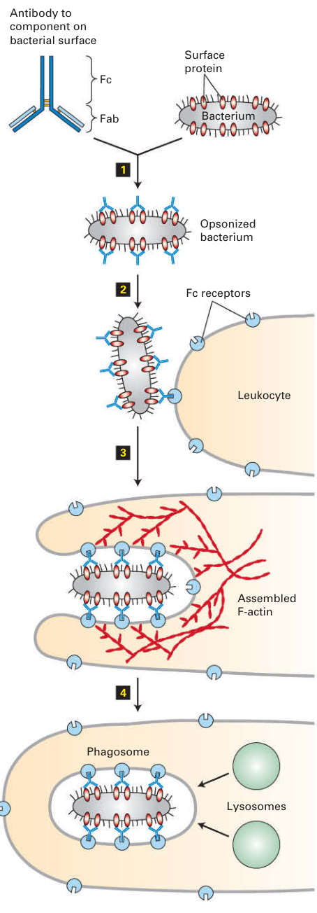
| Antibody to component on bacterial surface | 针对细菌表面成分的抗体 |
| Surface protein | 表面蛋白 |
| Fc | Fc |
| Fab | Fab |
| Bacterium | 细菌 |
| Opsonized bacterium | 被调理的细菌 |
| Leukocyte | 白细胞 |
| Fc receptors | Fc受体 |
| Phagosome | 吞噬体 |
| Lysosomes | 溶酶体 |
| Assembled F-actin | 组装好的F-actin |
相反，单体-聚合物平衡被另一种海绵毒素jasplakinolide以及从毒鹅膏（Amanita phalloides，"死亡天使"蘑菇）中分离的鬼笔环肽（phalloidin）推向丝的方向。Jasplakinolide通过结合并稳定肌动蛋白二聚体、从而降低临界浓度来增强成核。鬼笔环肽结合在F-actin中亚基之间的界面上，把相邻亚基锁在一起，阻止肌动蛋白丝解聚。即使肌动蛋白被稀释到低于其临界浓度，被鬼笔环肽稳定的丝也不会解聚。由于许多基于肌动蛋白的过程依赖肌动蛋白丝的周转，向细胞中引入鬼笔环肽会使所有这些系统瘫痪，细胞随之死亡。然而，鬼笔环肽对研究人员非常有用，因为只结合F-actin的荧光标记鬼笔环肽常被用于在光学显微镜下对肌动蛋白丝染色（见图17-4）。
- 肌动蛋白组装由两类蛋白质成核：形成蛋白使无分支丝的组装成核（见图17-13），而Arp2/3复合物使分支肌动蛋白网络的组装成核（见图17-15）。形成蛋白和Arp2/3的活性受信号转导通路的调控。
- 功能不同的基于肌动蛋白的结构由形成蛋白和Arp2/3成核因子组装。形成蛋白驱动应力纤维和收缩环的组装，而Arp2/3使运动细胞前缘中的分支肌动蛋白丝的组装成核。
- 肌动蛋白聚合的力量可被用来做功，正如在病原菌Arp2/3依赖性的胞内运动（见图17-17）以及内吞囊泡向内的运动（见图17-18和图17-19）中所见。
- 若干毒素影响肌动蛋白聚合的动态；有些（如红海海绵素）结合并隔离肌动蛋白单体，而另一些（如鬼笔环肽）稳定纤维状肌动蛋白。荧光标记的鬼笔环肽可用于对肌动蛋白丝染色。
17.4 基于肌动蛋白的细胞结构的组织
我们已经看到，肌动蛋白丝可以组装成多种多样不同的排列方式，而且许多相关蛋白能促成肌动蛋白的组装并调节丝的周转。一个脊椎动物细胞中有数十种蛋白把这些丝组织成功能各异的结构。这里我们只讨论其中的少数几种，举例说明细胞中典型的几类肌动蛋白交联蛋白，以及参与在肌动蛋白与膜蛋白之间建立功能性连接的蛋白。一个引人入胜却所知甚少的问题是，细胞如何在同一个细胞的细胞质中组装出不同的基于肌动蛋白的结构。其中一部分组织方式必定源于局部调节，这一话题我们将在本章末尾讨论。
交联蛋白将肌动蛋白丝组织成束或网络
在试管中组装肌动蛋白丝时，它们会形成缠结的网络。然而在细胞中，肌动蛋白丝以多种不同的结构存在，例如微绒毛中高度有序的丝束，或运动细胞前缘特有的网络（见图17-4a）。
这些不同的结构取决于上文讨论的丝的组装机制，以及肌动蛋白交联蛋白的存在。要能够组织肌动蛋白丝，一种肌动蛋白交联蛋白必须具有两个F-actin结合位点（图17-20a）。
F-actin的交联可以通过在单一多肽内含有两个肌动蛋白结合位点来实现，正如丝束蛋白（fimbrin）那样；丝束蛋白是微绒毛中的一种蛋白，它把极性都相同的丝构建成束（图17-20b）。另一些肌动蛋白交联蛋白在多肽链上只有一个肌动蛋白结合位点，两条链缔合形成二聚体，从而把两个肌动蛋白结合位点聚到一起。这些二聚体交联蛋白可以组装成一根连接两个结合位点的刚性杆，α-辅肌动蛋白就是如此。与丝束蛋白一样，α-辅肌动蛋白也使平行的肌动蛋白丝成束，但使丝与丝之间的距离比丝束蛋白更远。另一种称为血影蛋白的蛋白是带有两个肌动蛋白结合位点的四聚体；血影蛋白跨越的肌动蛋白丝间距更大，并在质膜下方形成网络（见图17-21，下一节将讨论）。另一些类型的交联蛋白，例如细丝蛋白（filamin），其两个肌动蛋白结合位点之间有一个高度柔性的区域，功能如同分子板簧，因此它们能在网络中的丝之间形成稳定的交联（图17-20c），就像运动细胞前缘中的那种网络。我们在讨论成核肌动蛋白丝组装的能力时提到过的Arp2/3复合物，也是一种重要的交联蛋白，它把一条丝的(−)端连接到另一条丝的侧面（见图17-15）。
衔接蛋白把肌动蛋白丝连接到膜上
为了对细胞的结构有所贡献并利用肌动蛋白聚合的力量，肌动蛋白丝常常附着在膜上，或与细胞内的结构相联系。肌动蛋白丝在质膜下方的细胞皮层中尤其丰富，它们为质膜提供支撑。肌动蛋白丝可以以侧向方式或以其末端与膜相互作用。
我们关于肌动蛋白丝附着于膜的第一个例子涉及人红细胞——红血球。红细胞基本上就是一层质膜包裹着高浓度的血红蛋白。它的功能是运输氧气——从肺到组织，以及运输二氧化碳——从组织回到肺，而这一切都由这块被称为心脏的非凡肌肉提供动力。红细胞必须能够经受住心脏中血流汹涌的急流，随后顺动脉而下，并经受住被挤压通过狭窄毛细血管的考验，之后经心脏循环通过肺。为了在这种严酷的过程中存活数千个循环，红细胞在质膜下方有一个基于血影蛋白的网络，赋予它们这段旅程所必需的抗张强度和柔韧性。这个网络以长度约14个亚基的短肌动蛋白丝为基础，这些短丝的两侧由原肌球蛋白（将在17.6节中更详细地讨论）稳定，(−)端则由加帽蛋白原肌球调节蛋白稳定。这些短丝充当约六个柔性血影蛋白分子的结合枢纽，生成一种渔网状结构（图17-21a），既提供强度又提供柔韧性。血影蛋白分子通过两种机制附着到膜蛋白上：一是通过一种称为锚蛋白的蛋白连接到碳酸氢盐转运蛋白（一种也称为带3蛋白的跨膜蛋白），二是通过一种称为带4.1蛋白的、能结合血影蛋白和F-actin的蛋白连接到另一种称为血型糖蛋白C的跨膜蛋白（图17-21b）。虽然这种基于血影蛋白的网络在红细胞中高度发达，类似的连接方式也存在于许多细胞类型中。例如，一种相关的锚蛋白-血影蛋白连接把上皮细胞基底外侧膜上的Na+/K+ ATP酶连接到肌动蛋白细胞骨架。
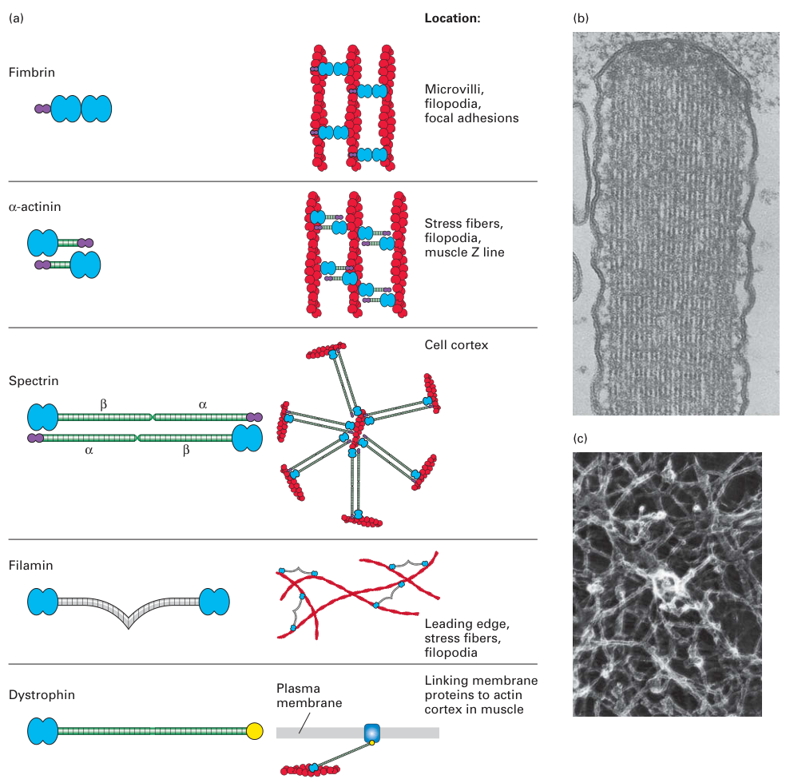
| Location | 位置 |
| Microvilli | 微绒毛 |
| filopodia | 丝状伪足 |
| focal adhesions | 黏着斑 |
| Stress fibers | 应力纤维 |
| muscle Z line | 肌肉Z线 |
| Cell cortex | 细胞皮层 |
| Leading edge | 前缘 |
| Dystrophin | 抗肌萎缩蛋白 |
| Fimbrin | 丝束蛋白 |
| α-actinin | α-辅肌动蛋白 |
| Spectrin | 血影蛋白 |
| Filamin | 细丝蛋白 |
| Plasma membrane | 质膜 |
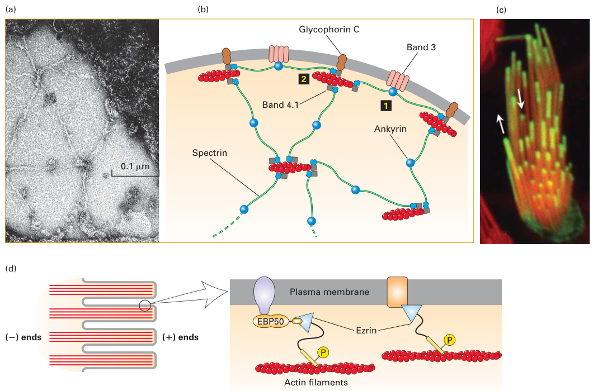
| Glycophorin C | 血型糖蛋白C |
| Band 4.1 | 带4.1蛋白 |
| Ankyrin | 锚蛋白 |
| Band 3 | 带3蛋白 |
| Spectrin | 血影蛋白 |
| Ezrin | 埃兹蛋白 |
| Plasma membrane | 质膜 |
| Actin filaments | 肌动蛋白丝 |
| EBP50 | EBP50 |
红细胞细胞骨架蛋白的遗传缺陷可导致细胞容易破裂，引起称为遗传性球形红细胞性贫血的疾病（"球形"是因为细胞更圆，"贫血"是因为红细胞数量不足），因而寿命缩短。在人类患者中，血影蛋白、带4.1蛋白和锚蛋白的突变都可引起这类疾病。■
微丝还为微绒毛和膜皱褶等细胞表面结构提供支撑。观察一个微绒毛就会发现，其肌动蛋白丝必定在顶端以末端附着，并沿其全长有侧向附着。微绒毛中肌动蛋白丝的方向如何？装饰实验表明，(+)端位于顶端。此外，当把荧光标记的肌动蛋白加入细胞时，它会被掺入微绒毛的顶端，这不仅表明(+)端在那里，还表明肌动蛋白丝的组装就发生在那里（图17-21c）。目前尚不清楚肌动蛋白丝如何附着在微绒毛顶端，也不清楚那里的组装是如何被调节的。这种(+)端的方向肌动蛋白丝相对于质膜的这种取向几乎是普遍存在的——不仅见于微绒毛，例如也见于运动细胞的前缘。与质膜的侧向附着至少部分由ERM（埃兹蛋白-根蛋白-膜突蛋白）家族蛋白提供。这个家族由受调控的蛋白组成，它们以折叠的失活形式存在。当响应外部信号、被磷酸化而局部激活时，ERM蛋白的F-actin结合位点和膜蛋白结合位点便暴露出来，从而与肌动蛋白丝形成侧向连接（图17-21d）。ERM蛋白可以直接或通过支架蛋白间接地把肌动蛋白丝连接到膜蛋白的胞质结构域上。
我们目前讨论的这些肌动蛋白-膜连接类型，并不涉及质膜上直接与组织中的其他细胞或与细胞外基质相连的区域，但这样的连接确实存在。上皮细胞之间的接触由质膜上称为黏着连接的高度特化区域介导（见图17-1b）。另一些称为黏着斑的特化结合区域介导细胞与细胞外基质的附着。反过来，这些特化的附着类型又与细胞骨架相连，我们将在讨论细胞迁移（17.7节）以及组织背景下的细胞（见第20章）时更详细地描述。
肌营养不良是一类遗传病，通常以骨骼肌进行性无力为特征。其中一种遗传病——杜氏肌营养不良——累及抗肌萎缩蛋白，其基因位于X染色体上，因此该病在男性中的发病率远高于女性。抗肌萎缩蛋白是一种模块化蛋白，其功能是把肌细胞的皮层肌动蛋白网络连接到一组与细胞外基质相连的膜蛋白复合物上。因此，抗肌萎缩蛋白具有一个N端肌动蛋白结合结构域，随后是一系列类似血影蛋白的重复序列，并以一个把跨膜肌营养不良蛋白聚糖复合物连接到细胞外基质蛋白层粘连蛋白的结构域结束（见图17-20a和图1-31）。在缺乏抗肌萎缩蛋白时，肌细胞的质膜会因反复的肌肉收缩而变弱，最终破裂，导致肌纤维死亡。■
17.5 肌球蛋白：基于肌动蛋白的马达蛋白
在17.3节中，我们讨论了由Arp2/3复合物成核的肌动蛋白聚合如何能被用来做功，例如内吞过程中囊泡的运动、运动细胞前缘处的运动，以及李斯特菌跨越真核细胞时的推进。除了这种基于肌动蛋白聚合的运动之外，细胞还拥有一个庞大的马达蛋白家族，称为肌球蛋白，它们能够沿着肌动蛋白丝移动。最早被发现的肌球蛋白——肌球蛋白II——是从骨骼肌中分离得到的。在很长一段时间里，生物学家认为这是自然界中唯一存在的肌球蛋白类型。然而，他们随后又发现了其他类型的肌球蛋白，并开始追问究竟可能存在多少种不同的功能类别。今天我们知道，除了骨骼肌中的肌球蛋白II之外，还有若干种不同的肌球蛋白类别可沿着肌动蛋白移动。的确，随着对所有这些基于微丝的马达以及下一章将要描述的相应基于微管的马达的发现和分析，我们以前那种相对静态的细胞观已被这样一种认识所取代：细胞质具有惊人的动态性——就像一个组织有序却繁忙的高速公路系统，马达在其中川流不息地运送着各种组分。
肌球蛋白具有一种惊人的能力，能把ATP水解所释放的能量转化为机械功（沿肌动蛋白的运动）。所有肌球蛋白都把ATP水解的能量转化为功，但不同的肌球蛋白执行的功能类型却大不相同。例如，许多肌球蛋白II分子协同牵拉肌动蛋白丝，从而引起肌肉收缩；而肌球蛋白V则与囊泡货物结合，将其沿肌动蛋白丝运输。其他类别的肌球蛋白提供着多种多样的功能，从在细胞内移动细胞器到参与细胞迁移。
为了开始了解肌球蛋白，我们先讨论它们的一般组织形式。有了这些信息，我们将探讨不同生物中肌球蛋白类别的多样性，并更详细地描述其中一些在真核生物中常见的类别。为了理解这些肌球蛋白类别多样的功能如何能被同一种马达机制所容纳，我们将研究把ATP水解所释放的能量转化为功的基本机制，然后看看该机制如何被修饰，从而把特定肌球蛋白类别的特性量身定制到与其特定功能相适应。
肌球蛋白具有功能各异的头部、颈部和尾部结构域
我们对肌球蛋白的大部分了解来自对从骨骼肌中分离的肌球蛋白II的研究。在骨骼肌中，数百个单独的肌球蛋白II分子组装成称为粗丝的双极性束（图17-22a）。在后文的一节中，我们将讨论这些肌球蛋白丝如何与肌动蛋白丝相互交错，从而引起肌肉收缩。这里我们先考察肌球蛋白分子本身的性质。
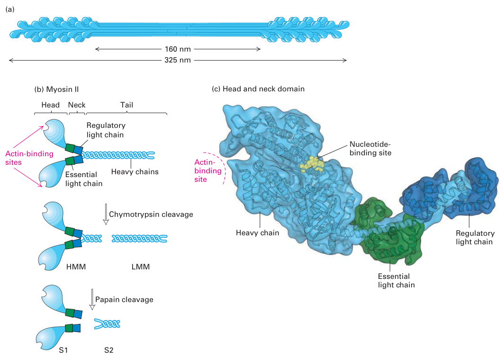
| Actin-binding site | 肌动蛋白结合位点 |
| Essential light chain | 必需轻链 |
| Regulatory light chain | 调节轻链 |
| Head | 头部 |
| Neck | 颈部 |
| Tail | 尾部 |
| Head and neck domain | 头部和颈部结构域 |
| Heavy chain | 重链 |
| Myosin II | 肌球蛋白II |
| HMM | 重酶解肌球蛋白（HMM） |
| LMM | 轻酶解肌球蛋白（LMM） |
| S1 | S1片段 |
| S2 | S2片段 |
| Chymotrypsin cleavage | 胰凝乳蛋白酶切割 |
| Papain cleavage | 木瓜蛋白酶切割 |
| Nucleotide-binding site | 核苷酸结合位点 |
把肌球蛋白粗丝溶解在含有ATP和高浓度盐的溶液中，就能得到由单个肌球蛋白II分子组成的库。可溶性的肌球蛋白II分子实际上是一个由6个多肽亚基组成的蛋白质复合物。其中两个亚基是相同的高分子量多肽，称为肌球蛋白重链。每条重链都由一个球状的头部结构域和一个长长的尾部结构域组成，两者之间由一个柔性的颈部结构域相连。两条肌球蛋白重链的尾部相互缠绕，使两个头部区域彼此靠近。肌球蛋白复合物其余4个亚基的尺寸较小，称为轻链。轻链有两种类型：必需轻链和调节轻链。每条重链的颈部区域都结合有每种类型的一条轻链（图17-22b，上）。肌球蛋白重链和两种类型的轻链由三个不同的基因编码。
可溶性肌球蛋白II分子具有ATP酶活性，这反映了它通过水解ATP驱动运动的能力。但肌球蛋白复合物的哪一部分负责这一活性呢？鉴定蛋白质中功能结构域的一种标准做法是：用特异性蛋白酶把蛋白质切割成片段，然后考察哪些片段具有该活性。可溶性肌球蛋白II经蛋白酶胰凝乳蛋白酶温和处理后可被切割成两个片段，一个称为重酶解肌球蛋白（HMM；mero意为"部分"），另一个称为轻酶解肌球蛋白（LMM）（图17-22b，中）。重酶解肌球蛋白还可被蛋白酶木瓜蛋白酶进一步切割，产生亚片段1（S1）和亚片段2（S2）（图17-22b，下）。通过分析各片段——S1、S2和LMM——的性质，人们发现肌球蛋白的内在ATP酶活性以及它的F-actin结合位点都位于S1片段中。此外还发现，S1片段的ATP酶活性在纤维状肌动蛋白存在时大大增强，因此该片段被称为具有肌动蛋白激活的ATP酶活性，这是所有肌球蛋白的一个标志性特征。肌球蛋白II的S1片段由头部和颈部结构域及其结合的轻链组成，而S2和LMM区域则构成尾部结构域。
对头部和颈部结构域的X射线晶体学分析揭示了各亚基的形状、轻链的位置，以及ATP结合位点和肌动蛋白结合位点的所在（图17-22c）。肌球蛋白头部的基部是α螺旋的颈部，两条轻链分子像C形夹钳一样缠绕在重链上。在这个位置上，轻链使颈部区域变硬。肌动蛋白结合位点是头部结构域顶端的一个暴露区域；ATP结合位点也位于头部结构域内，处在与肌动蛋白结合位点相对的一个裂隙中。
肌球蛋白II分子的多少部分对其"马达"活性是必要且充分的？要回答这个问题，需要一种简便的体外运动分析。在这样一种分析中，即滑行丝分析中，肌球蛋白分子被束缚在盖玻片上，然后向其中加入经过稳定化处理并用荧光标记的肌动蛋白丝。由于肌球蛋白分子被束缚住，它们不能滑动；因此，肌球蛋白头部与肌动蛋白丝相互作用所产生的任何力都会迫使肌动蛋白丝相对于肌球蛋白移动（图17-23a）。如果存在ATP，可以看到加入的肌动蛋白丝沿着盖玻片表面滑行；如果缺少ATP，则观察不到丝的运动。利用这种分析可以证明，肌球蛋白II的S1片段就足以引起肌动蛋白丝的运动。这种运动是由被束缚的（结合在盖玻片上的）肌球蛋白S1片段试图朝丝的(+)端"移动"所引起的；因此，肌动蛋白丝以(−)端在前的方式移动。肌球蛋白移动肌动蛋白丝的速率可以从滑行丝分析的录像中测定（图17-23b）。
所有肌球蛋白都含有一个与肌球蛋白II的S1结构域相关的结构域，由头部和颈部结构域组成，负责它们的马达活性。不过，正如我们将在后文的一节中看到的，颈部结构域的长度以及与之结合的轻链数目和类型在不同肌球蛋白类别之间有所差异。尾部结构域对运动性没有贡献，而是决定S1相关结构域所移动的对象。因此，正如可以预料的那样，尾部结构域可能差别很大，它们被裁剪成能结合特定的货物。
肌球蛋白构成一个庞大的机械化学马达蛋白家族
由于所有肌球蛋白都具有相关的S1结构域，且其一级氨基酸序列具有相当高的相似性，因此有可能确定一个已测序的基因组中存在多少个肌球蛋白基因以及多少个不同的肌球蛋白类别。人类基因组中约有40个肌球蛋白基因（图17-24），果蝇中有9个，芽殖酵母中有5个。对肌球蛋白头部结构域之间序列关系的计算机分析提示，真核生物中已进化出约20个不同的肌球蛋白类别，且同一类别内的序列相似性高于类别之间。如图17-24所示，一些病症的遗传基础已被追溯到编码肌球蛋白的基因。所有肌球蛋白头部结构域都以相同的一般机制把ATP水解转化为机械功。然而，正如我们将看到的，这一机制中的细微变化可以对不同肌球蛋白类别的功能特性产生深远影响。这些不同类别在尾部结构域方面关系如何呢？令人惊奇的是，如果只取肌球蛋白尾部结构域的蛋白质序列，并用这些信息把它们归类，它们会落入与马达结构域相同的分组中。这一发现意味着具有特定性质的头部结构域与特定类别的尾部结构域是共同进化的，这非常合理，提示每一类肌球蛋白都已进化来执行某一特定的功能。
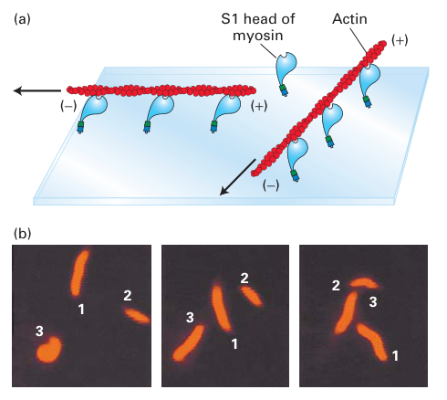
| S1 head of myosin | 肌球蛋白S1头部 |
| Actin | 肌动蛋白 |
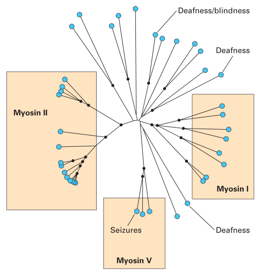
| Myosin I | 肌球蛋白I |
| Myosin II | 肌球蛋白II |
| Myosin V | 肌球蛋白V |
| Deafness/blindness | 耳聋/失明 |
| Deafness | 耳聋 |
| Seizures | 癫痫发作 |
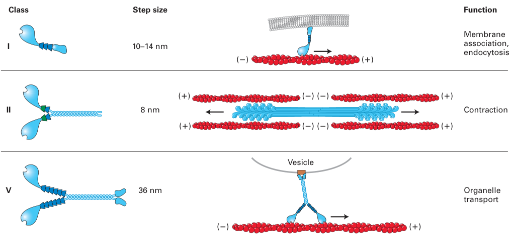
| Class | 类别 |
| Step size | 步长 |
| Function | 功能 |
| Contraction | 收缩 |
| Organelle transport | 细胞器运输 |
| Vesicle | 囊泡 |
| Membrane association | 膜结合 |
| Endocytosis | 内吞 |
在所有这些肌球蛋白类别中，有三类研究得特别透彻，它们在动物和真菌中普遍存在：即所谓的肌球蛋白I、肌球蛋白II和肌球蛋白V家族（图17-25）。在人类中，有8个基因编码重链供肌球蛋白I家族使用，14个编码肌球蛋白II家族的重链，3个编码肌球蛋白V家族的重链（见图17-24）。
肌球蛋白II分子组装成双极性丝，丝的两半取向相反，因此丝的两端各有一簇头部结构域。这种组织形式对其参与收缩很重要；事实上，这是唯一参与收缩功能的肌球蛋白类别。这一类别成员数目众多，反映了对收缩特性略有差异的肌球蛋白II丝的需求——这种差异见于不同的肌肉（如骨骼肌、心肌和各种类型的平滑肌）以及非肌细胞中。
肌球蛋白II类是唯一能组装成双极性丝的类别。所有肌球蛋白II成员都有一个相对较短的颈部结构域，且每条重链带有两条轻链。肌球蛋白I类规模相当大，其颈部区域结合的轻链数目可变，并且是唯一一类两条重链不通过尾部结构域相连因而是单头的肌球蛋白。肌球蛋白I类的庞大规模和多样性提示这些肌球蛋白执行许多功能，其中大多尚待确定，但该家族的一些成员把肌动蛋白丝连接到膜上，另一些则与内吞有关。由于这些肌球蛋白分子各自只有一个头部，必须有几个分子共同作用才能产生运动，并且至少有一个必须始终附着在肌动蛋白丝上。肌球蛋白V类的成员有两条重链，因而形成一个双头马达，其颈部区域很长、各带六条轻链，尾部区域则二聚化并终止于能结合特定待运输细胞器的结构域。我们很快就会看到，颈部区域的长度影响肌球蛋白运动的速率。
在迄今测试过的所有情形中，肌球蛋白都朝肌动蛋白丝的(+)端移动——只有一个例外，即动物中发现的肌球蛋白VI。这种非凡的肌球蛋白在其头部结构域中有一段插入序列，使其朝相反方向工作，因此它的运动朝向肌动蛋白丝的(−)端。人们认为肌球蛋白VI通过把内吞囊泡沿肌动蛋白丝运离质膜而参与内吞。回忆一下，与膜结合的肌动蛋白丝其(+)端朝向膜，因此一个朝向(−)端的马达会把它们运离膜、朝向细胞中心。
肌球蛋白头部的构象变化把ATP水解与运动偶联起来
对肌肉收缩的研究首次提供了证据，表明肌球蛋白头部沿肌动蛋白丝滑行或行走。体外运动分析和单分子力测量技术的发展极大地促进了肌肉收缩机制的阐明。基于用这些技术获得的信息以及肌球蛋白头部的三维结构（见图17-22c），研究人员提出了一个通用模型，说明肌球蛋白如何利用ATP水解所释放的能量沿肌动蛋白丝移动（图17-26）。由于人们认为所有肌球蛋白都用相同的基本机制产生运动，我们暂时不去考虑肌球蛋白尾部是结合在囊泡上，还是像在肌肉中那样构成粗丝的一部分。该模型最重要的方面是：单个ATP分子的水解与肌球蛋白分子沿肌动蛋白丝迈出的每一步相偶联。
肌球蛋白如何把ATP水解所释放的化学能转化为机械功呢？如上所述，肌球蛋白的S1头部是一种ATP酶，因此有能力把ATP水解为ADP和Pi。生化分析已揭示肌球蛋白运动的机制（图17-26a）。在没有ATP时，肌球蛋白头部与F-actin结合得非常紧密。当ATP结合到头部时，它对F-actin的亲和力大大降低，于是从肌动蛋白上释放下来。肌球蛋白头部随后水解ATP，水解产物ADP和Pi仍结合在它上面。ATP水解提供的能量诱导头部发生构象变化，使头部结构域相对于颈部转动，从而呈现所谓的"竖起"（cocked）位置（图17-26b，上）。在没有F-actin时，Pi的释放极为缓慢——这是ATP酶循环中最慢的一步。然而在肌动蛋白存在时，头部与F-actin紧密结合，同时诱导Pi的释放和头部转回其原来位置，从而使肌动蛋白丝相对于颈部结构域移动（图17-26b，下）。就这样，与F-actin结合既诱导头部的运动，又诱导Pi的释放，从而把这两个过程偶联起来。这一步称为动力冲程。头部保持结合状态，直到ADP离开、新的ATP结合到头部上，才把它从肌动蛋白丝上释放下来。随后循环重复，肌球蛋白便能再次沿丝移动。
头部核苷酸结合口袋中ATP的水解如何被转化为力？ATP的水解引起头部结构域发生微小的构象变化。这一微小运动被头部基部的一个"转换器"（converter）区域放大，该区域像一个支点一样起作用，使杆状的颈部（也称为杠杆臂）发生转动。这种转动又被颈部结构域放大，于是肌动蛋白丝移动几纳米（见图17-26b）。
这个模型做出了一个强有力的预测：水解一个ATP时肌球蛋白沿肌动蛋白移动的距离——即肌球蛋白的步长——应当与颈部结构域的长度成正比。为检验这一预测，人们构建了带有不同长度颈部结构域的突变肌球蛋白分子，并测定了它们沿肌动蛋白丝移动的速率。值得注意的是，颈部结构域的长度与运动速率之间存在极好的相关性（图17-27）。
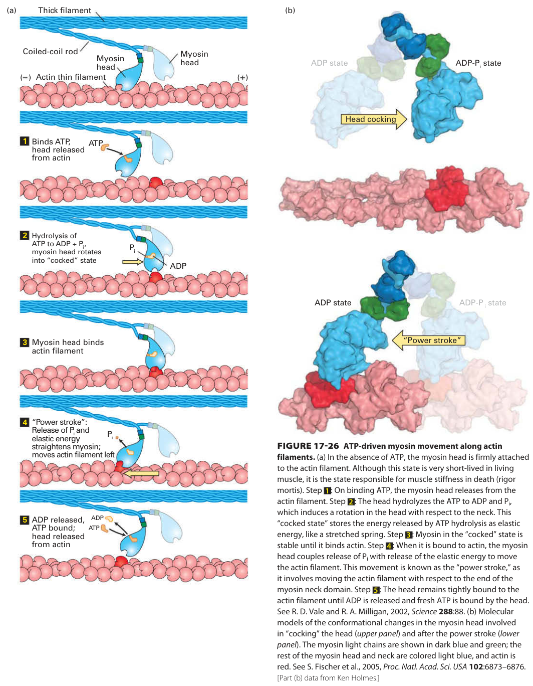
| ADP-Pi state | ADP-Pi状态 |
| ADP state | ADP状态 |
| Power stroke | 动力冲程 |
| Head cocking | 头部竖起 |
| Coiled-coil rod | 卷曲螺旋杆 |
| Myosin head | 肌球蛋白头部 |
| Actin thin filament | 肌动蛋白细丝 |
| Thick filament | 粗丝 |
| ATP | ATP |
| ADP | ADP |
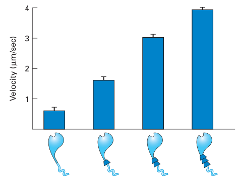
| Velocity (μm/sec) | 速度（μm/sec） |
肌球蛋白头部沿肌动蛋白丝采取离散的步进
肌球蛋白最关键的特征是它能产生驱动运动的力。研究人员利用光镊来测量单个肌球蛋白分子所产生的力（图17-28a）。在这种方法中，肌球蛋白以低密度固定在小珠上。一条肌动蛋白丝被夹持在两个光镊之间，向小珠降低，直到它接触到小珠上的一个肌球蛋白分子。加入ATP后，肌球蛋白便牵拉肌动蛋白丝。利用由计算机控制的机械反馈机制，可以测量被牵拉的距离以及力的大小和运动的持续时间。光镊研究的结果表明，肌球蛋白II采取离散的步进，平均约为8 nm（图17-28b），并产生3–5皮牛顿（pN）的力，大约相当于重力施加在单个细菌上的力。我们还可以看到，肌球蛋白II并不连续地与肌动蛋白丝相互作用，而是结合、移动、然后再释放它（见图17-28b）。事实上，肌球蛋白II在每个ATP酶循环中平均只有约10%的时间与F-actin接触——据说它的占空比为10%。这一观察在以后会很重要，因为我们要考虑到：在收缩的肌肉中，数百个肌球蛋白头部共同牵拉肌动蛋白丝，因此在任一时刻都有10%的头部处于工作状态，从而提供平滑的收缩。
现在让我们来考察肌球蛋白V是如何运动的。科学家们成功地把一个荧光探针只连接到肌球蛋白V分子两个颈部区域中的一个上，并在分子沿肌动蛋白丝上移动时观察荧光图像（图17-29a）。被标记的头部迈出许多72 nm的步进而始终不脱离肌动蛋白——据说它是持续性地移动（图17-29b）。这个步长是肌动蛋白丝中螺旋重复之间36 nm长度的两倍（见图17-5b和图17-29a）。因此，当每个头部交替迈出72 nm的步进时，丝上每个36 nm的螺旋重复位点都能提供结合位点——就像一个人踩着踏脚石过河，每只脚都落在隔一块的石头上。请注意，尽管每个单独头部的步长是72 nm，但连接在肌球蛋白V尾部区域上的货物每一步只移动36 nm，因为头部从货物后面移动到它的前面。因此，如图17-29所示，该马达整体的步长被认为是36 nm。肌球蛋白V想必是进化出了长长的颈部结构域——杠杆臂——以迈出大的步进，从而与丝上螺旋重复的尺寸相匹配。此外，它的ATP酶循环也经过修饰：通过减慢ADP释放的速率，使其具有高得多的占空比（>70%）；因此头部在循环中与肌动蛋白丝接触的时间百分比大得多。由于单个肌球蛋白V分子有两个头部，大于50%的占空比可确保它沿肌动蛋白丝向下移动时始终保持着接触，从而不会掉落。这些正是一个为沿肌动蛋白丝运输货物而设计的马达所应具备的特性。
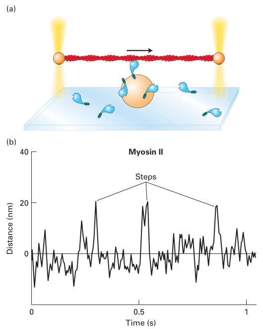
| Myosin II | 肌球蛋白II |
| Time (s) | 时间（s） |
| Steps | 步数 |
| Distance (nm) | 距离（nm） |
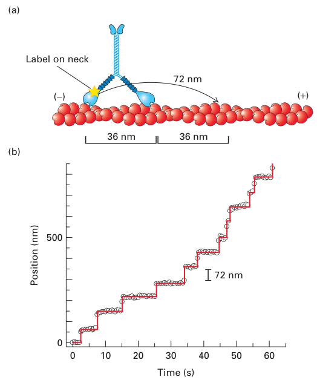
| Label on neck | 颈部上的标记 |
| Time (s) | 时间（s） |
| Position (nm) | 位置（nm） |
- 肌球蛋白是由ATP水解驱动的基于肌动蛋白的马达。
- 肌球蛋白具有马达头部结构域、起杠杆臂作用的颈部结构域以及结合货物的尾部结构域（见图17-22）。
- 肌球蛋白有许多类别，其中三类存在于许多真核生物中：肌球蛋白I，只有一个头部结构域；肌球蛋白II，有两个头部并能组装成双极性丝；以及肌球蛋白V，有两个头部但不组装成丝（见图17-25）。
- 当头部与F-actin结合时，肌球蛋白通过颈部结构域放大头部的微小构象变化，从而把ATP水解转化为机械功（见图17-26）。
- 肌球蛋白头部沿肌动蛋白丝采取离散的步进，在肌球蛋白II中这些步进很小（8 nm）且是非持续性的，而在肌球蛋白V中则很大（马达整体为36 nm，每个头部为72 nm）且是持续性的。
17.6 肌球蛋白驱动的运动
我们已经讨论了负责肌球蛋白马达特性的头部结构域和颈部结构域。现在我们来看尾部结构域，它决定了肌球蛋白所运输的货物。在后生动物中发现的许多新发现的肌球蛋白类别，其功能尚不清楚。本节我们只给出两个例子，对于这两个例子中肌球蛋白的具体功能我们已有较好的了解。我们的第一个例子是骨骼肌，肌球蛋白II就是在其中被发现的。在肌肉中，许多肌球蛋白II头部（每个都具有低占空比）被捆绑成双极丝，它们在其中协同工作以实现收缩。以类似方式组织的收缩机器在平滑肌收缩、应力纤维以及胞质分裂期间的收缩环中发挥作用。然后我们转向肌球蛋白V类，其较高的占空比使这些肌球蛋白能够在相对较长的距离上运输货物而不与肌动蛋白丝解离。
骨骼肌中的肌球蛋白粗丝与肌动蛋白细丝在收缩期间相互滑过
肌肉细胞已进化出执行一项高度特化功能的能力：收缩。肌肉收缩必须快速而重复地发生，而且必须在长距离上发生，并具有足以移动大负荷的力。典型的骨骼肌细胞呈圆柱形、体积大（长1–40 mm、宽10–50 μm）且多核（含多达100个细胞核）（图17-30a）。每个肌肉细胞内部有许多肌原纤维，它们由规则的重复阵列组成一种称为肌节的特化结构（图17-30b）。肌节在静息肌肉中长约2 μm，在收缩期间缩短约其长度的70%。电子显微术和生化分析表明，每个肌节含有两种主要类型的丝：由肌球蛋白II组成的粗丝，以及含有肌动蛋白和相关蛋白的细丝（图17-30c）。
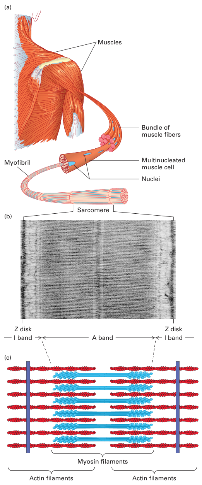
| Z disk | Z盘 |
| A band | A带 |
| I band | I带 |
| Sarcomere | 肌节 |
| Muscles | 肌肉 |
| muscle fibers | 肌纤维 |
| Multinucleated | 多核的 |
| muscle cell | 肌细胞 |
| Nuclei | 细胞核 |
| Myofibril | 肌原纤维 |
| Myosin filaments | 肌球蛋白丝 |
| Actin filaments | 肌动蛋白丝 |
粗丝是肌球蛋白II双极丝，其中丝每一半上的头部取向相反（见图17-22a）。细肌动蛋白丝的组装方式使其(+)端埋入一种称为Z盘的深染结构，因此肌节中的两组肌动蛋白丝取向相反（图17-31）。要理解肌肉如何收缩，可考虑一个肌球蛋白头部（粗丝中数百个头部之一）与一条细（肌动蛋白）丝之间的相互作用，如图17-26所示。在这些循环性相互作用（也称为交叉桥循环）中，ATP的水解与肌球蛋白头部朝向Z盘的运动相偶联，而Z盘对应于肌动蛋白细丝的(+)端。由于粗丝是双极的，粗丝两端肌球蛋白头部的动作将细丝拉向粗丝中心，从而拉向肌节中心（见图17-31）。这种运动使肌节缩短，直到粗丝末端抵住Z盘。完整肌肉的收缩源于单条粗丝上数百个肌球蛋白头部的活动，并由肌节中数百条粗丝和细丝以及肌纤维中数千个肌节所放大。现在我们可以理解为什么肌球蛋白II既是非持续性的，又需要具有低占空比：每个头部在肌动蛋白丝上拉动很短的距离，然后松开让其他头部拉动，因此许多头部一起工作使肌节能够平滑收缩。肌肉收缩滑行丝模型的第一个实验基础在经典实验17-1中着重介绍。
人的心脏是一个令人惊叹的收缩器官——它每年不间断地收缩约300万次，一生中约2亿次。心脏的肌肉细胞含有与骨骼肌非常相似的收缩机器，只不过它们是单核和双核细胞。在每个细胞中，末端肌节插入质膜上称为闰盘的结构，闰盘将细胞连接成一条收缩链。心肌细胞仅在生命早期产生，因此它们无法在受损（如心脏病发作时发生的情况）后再生。心脏收缩机器蛋白中的许多不同突变会引起肥厚型心肌病——心壁肌肉增厚，从而损害其功能。例如，已在心肌肌球蛋白重链基因中记录到许多突变，即使在杂合个体中这些突变也会损害该蛋白的收缩功能。在这类个体中，心脏试图通过肥大（增大）来代偿，这常常导致致命的心律失常（心跳不规则）。除了肌球蛋白重链缺陷外，导致心肌病的缺陷也被追溯到收缩机器其他组分的突变，包括肌动蛋白、肌球蛋白轻链、原肌球蛋白和肌钙蛋白，以及肌联蛋白等结构组分（下文讨论）。■
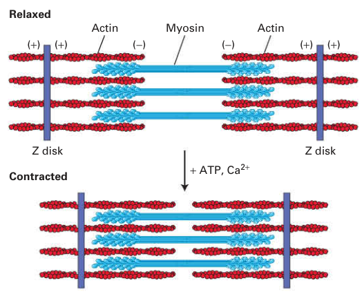
| Relaxed | 松弛 |
| Contracted | 收缩 |
| ATP | ATP |
| Ca2+ | Ca2+ |
| Myosin | 肌球蛋白 |
| Z disk | Z盘 |
| Actin | 肌动蛋白 |
骨骼肌由稳定蛋白和支架蛋白组织成形
肌节的结构由若干附属蛋白维持（图17-32）。肌动蛋白丝在其(+)端由CapZ稳定，在其(−)端由原肌球调节蛋白（tropomodulin）稳定。一种称为伴肌动蛋白（nebulin）的巨大蛋白沿细肌动蛋白丝延伸，从Z盘一直延伸到原肌球调节蛋白并与之结合。伴肌动蛋白由重复的结构域组成，这些结构域与丝中的肌动蛋白结合，据信肌动蛋白结合重复序列的数目（因而伴肌动蛋白的长度）决定了细丝的长度。另一种巨大蛋白称为肌联蛋白（因为它如此巨大），其头部与Z盘相连，并延伸到粗丝的中部，在那里另一个肌联蛋白分子延伸到下一个Z盘。肌联蛋白被认为是一种弹性分子，它将粗丝保持在肌节中部，并防止过度牵张，以确保粗丝始终保持穿插在细丝之间。
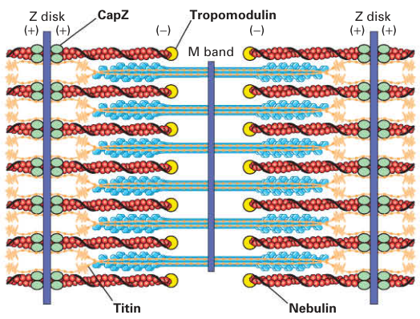
| Z disk | Z盘 |
| M band | M带 |
| CapZ | CapZ |
| Tropomodulin | 原肌球调节蛋白 |
| Titin | 肌联蛋白 |
| Nebulin | 伴肌动蛋白 |
骨骼肌的收缩由Ca2+和肌动蛋白结合蛋白调控
与许多细胞过程一样，骨骼肌收缩是由胞质Ca2+浓度升高所启动的。如第11章所述，胞质中的Ca2+浓度通常保持在低于0.1 μM的低水平。在骨骼肌细胞中，胞质低Ca2+水平主要由一种独特的Ca2+ ATP酶维持，它不断将Ca2+离子从含有肌原纤维的胞质泵入肌质网（SR），即肌肉细胞特化的内质网（图17-33）。这一活动在SR中建立了Ca2+储库。
神经冲动（或动作电位；见第22章）到达神经肌肉接头，会触发肌细胞质膜（也称为肌膜）产生动作电位。该动作电位沿质膜的内陷——称为T小管——向下传导，T小管穿入细胞并环绕每条肌原纤维。动作电位到达T小管会刺激SR膜上电压门控Ca2+通道开放，随后Ca2+从SR中释放，提高肌原纤维中的胞质Ca2+浓度。这种升高的Ca2+浓度诱导两种附属蛋白——原肌球蛋白和肌钙蛋白——发生变化，它们结合在肌动蛋白细丝上，通常阻断肌球蛋白的结合。这些蛋白在肌动蛋白细丝上位置的变化反过来允许肌球蛋白-肌动蛋白相互作用，从而实现收缩。这种调控类型非常迅速，被称为细丝调控。
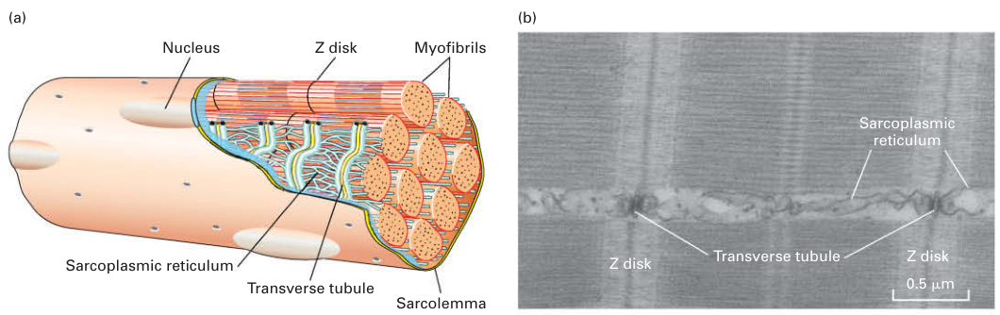
| Z disk | Z盘 |
| Sarcolemma | 肌膜 |
| Myofibrils | 肌原纤维 |
| Nucleus | 细胞核 |
| Transverse tubule | T小管 |
| Sarcoplasmic reticulum | 肌质网 |
原肌球蛋白（TM）是一种绳状分子，长约40 nm，结合在一条肌动蛋白丝上，与七个肌动蛋白亚基结合。TM分子首尾相连成串，沿肌动蛋白细丝的两侧形成连续的链（图17-34a, b）。与每个原肌球蛋白分子相关联的是肌钙蛋白（TN），一种由三个亚基组成的复合物：TN-T、TN-I和TN-C。TN-C是肌钙蛋白的钙结合亚基；它通过TN-I和TN-T亚基控制TM在肌动蛋白丝表面的位置。
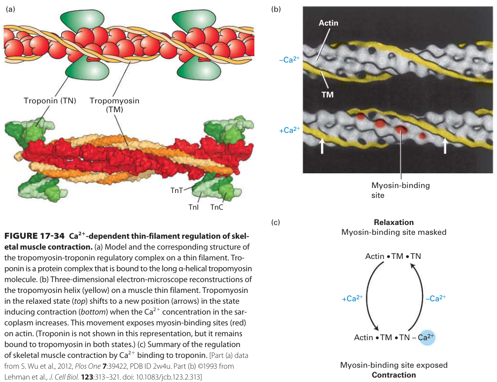
| Troponin (TN) | 肌钙蛋白（TN） |
| Tropomyosin (TM) | 原肌球蛋白（TM） |
| Myosin-binding site | 肌球蛋白结合位点 |
| Myosin-binding site exposed | 肌球蛋白结合位点暴露 |
| Myosin-binding site masked | 肌球蛋白结合位点被遮蔽 |
| Actin | 肌动蛋白 |
| Contraction | 收缩 |
| Relaxation | 松弛 |
| TnC | TnC |
| TnT | TnT |
| TnI | TnI |
在Ca2+和TN的控制下，TM在细丝上可占据两个位置之一。在没有Ca2+时，TM阻断肌球蛋白与F-actin的相互作用，肌肉处于松弛状态。Ca2+离子与TN-C结合，触发TM移动到丝上的新位置，从而暴露肌动蛋白上的肌球蛋白结合位点（见图17-34b）。因此，在Ca2+浓度大于1 μM时，TM-TN复合物施加的抑制被解除，收缩发生。骨骼肌中松弛与收缩状态之间依赖Ca2+的循环总结于图17-34c。
心肌与骨骼肌一样，也受细丝调控，但使用心脏特异性的原肌球蛋白和肌钙蛋白。在心脏病发作（心肌梗死）期间，心脏细胞得不到足够的氧（心肌缺血），随后可能死亡。死亡细胞的质膜破裂，将细胞成分释放到血液中。医生使用能特异性测量心脏特异性肌钙蛋白水平的血液检测来确定心脏病发作的严重程度。■
肌动蛋白与肌球蛋白II在非肌肉细胞中形成收缩束
如我们所见，在骨骼肌中，肌动蛋白细丝和肌球蛋白II粗丝组装成收缩结构。非肌肉细胞含有几种由肌动蛋白丝和肌球蛋白II丝组成的相关收缩束，它们与骨骼肌纤维相似，但组织性差得多。此外，它们缺乏肌钙蛋白调控系统而是由肌球蛋白磷酸化调控，如下文所讨论。
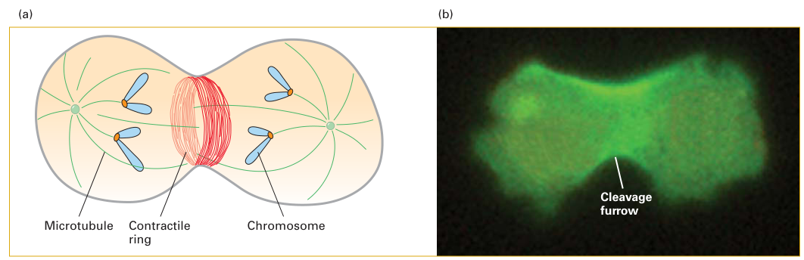
| Cleavage furrow | 分裂沟 |
| Microtubule | 微管 |
| Contractile ring | 收缩环 |
| Chromosome | 染色体 |
| Dictyostelium | 盘基网柄菌 |
在上皮细胞中，收缩束最常见的形式是黏着带，也称为环周带，它在黏着连接的水平上环绕细胞的内表面（见图17-4a）。这些束对维持上皮的完整性很重要（第20章讨论）。应力纤维见于培养在人工（玻璃或塑料）表面或细胞外基质上的细胞的下表面，是第二种类型的收缩束（见图17-4a, c），在细胞黏附中很重要，尤其是在可变形基质上。应力纤维的末端终止于含整合素的黏着斑，这是将细胞附着到下方基质的特殊结构（见下文图17-40和第20章）。环周带和应力纤维含有若干见于平滑肌收缩装置的蛋白，并表现出一些类似于肌肉肌节的组织特征。第三种类型的收缩束称为收缩环，是动物细胞中的一种瞬时结构，它在分裂细胞的赤道处组装，在纺锤体两极之间的中点环绕细胞（图17-35a）。随着环收缩，将质膜向内拉，胞质被分割并最终被掐成两部分，这一过程称为胞质分裂，产生两个子细胞。用抗肌球蛋白I和抗肌球蛋白II抗体染色的分裂细胞显示，肌球蛋白II定位于收缩环，而肌球蛋白I位于远端区域，在那里它将细胞皮层连接到质膜（图17-35b）。编码肌球蛋白II重链的基因被删除的细胞无法进行胞质分裂。相反，这些细胞形成多核合胞体，因为胞质分裂被抑制，而核分裂不受抑制。
肌球蛋白依赖性机制调控平滑肌和非肌肉细胞的收缩
平滑肌是一种由收缩细胞组成的特化组织，存在于许多内脏器官中。例如，平滑肌围绕血管以调节血压，围绕肠道以推动食物通过消化道，并收缩肺部的气道。平滑肌细胞含有大而排列松散的收缩束，类似于上皮细胞中的收缩束。平滑肌的收缩装置及其调控构成了一个有价值的模型，因为其收缩活动的调控方式与非肌肉细胞中的相似。正如我们刚刚看到的，骨骼肌收缩是通过结合在肌动蛋白细丝上的原肌球蛋白-肌钙蛋白复合物在有Ca2+时的收缩诱导状态与无Ca2+时的松弛状态之间切换来调控的。相比之下，平滑肌收缩是由肌球蛋白II在开和关状态之间的循环来调控的。肌球蛋白II的循环，因而平滑肌和非肌肉细胞的收缩，是响应许多细胞外信号分子而被调控的。
脊椎动物平滑肌的收缩主要由一条通路调控，其中与肌球蛋白II颈部结构域相关联的肌球蛋白调节轻链（LC）（见图17-22b）经历磷酸化和去磷酸化。当调节轻链未被磷酸化时，平滑肌肌球蛋白II采取折叠构象，其ATP酶循环处于失活状态。当调节轻链被肌球蛋白轻链激酶（MLCK）磷酸化时，肌球蛋白II展开，组装成有活性的双极丝，并变得有活性以诱导收缩（图17-36）；该酶的活性受胞质游离Ca2+水平的调控。MLCK活性的Ca2+依赖性调控通过Ca2+结合蛋白钙调蛋白介导（见图3-33）。钙先与钙调蛋白结合，诱导该蛋白发生构象变化，然后Ca2+/钙调蛋白复合物与MLCK结合并将其激活。当Ca2+恢复到静息水平时，MLCK失活，肌球蛋白轻链磷酸酶移除磷酸基团，使系统恢复到松弛状态。这种调控方式依赖于Ca2+在比肌节中更远距离上的扩散以及蛋白激酶的作用，因此平滑肌的收缩比骨骼肌慢得多。由于这种调控涉及肌球蛋白，它被称为粗丝调控。
与仅由神经冲动刺激收缩的骨骼肌不同，平滑肌细胞和非肌肉细胞受多种外部信号调控。例如，去甲肾上腺素、血管紧张素、内皮素、组胺和其他信号分子可通过触发各种信号转导通路，调节或诱导平滑肌收缩，或引起非肌肉细胞形状和黏附的改变。其中一些通路导致胞质Ca2+浓度升高；正如前面所述，这种升高可通过激活MLCK来刺激肌球蛋白活性（见图17-36）。如下文所述，其他通路激活Rho激酶，它也能通过磷酸化调节轻链来激活肌球蛋白活性，不过是以不依赖Ca2+的方式。
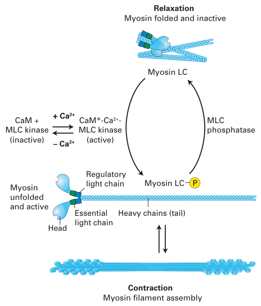
| Contraction | 收缩 |
| Relaxation | 松弛 |
| Myosin filament assembly | 肌球蛋白丝组装 |
| Myosin folded and inactive | 肌球蛋白折叠并失活 |
| Myosin unfolded and active | 肌球蛋白展开并有活性 |
| CaM | 钙调蛋白（CaM） |
| MLC kinase | 肌球蛋白轻链激酶（MLCK） |
| MLC phosphatase | 肌球蛋白轻链磷酸酶 |
| Myosin LC | 肌球蛋白轻链 |
| Regulatory light chain | 调节轻链 |
| Essential light chain | 必需轻链 |
| Heavy chains (tail) | 重链（尾部） |
| Head | 头部 |
结合于肌球蛋白V的囊泡沿肌动蛋白丝被运输
与肌球蛋白II丝的收缩功能相反，肌球蛋白V家族蛋白是已知持续性最强的肌球蛋白马达，它们沿肌动蛋白丝运输货物。在下一章中，我们将讨论它们如何与微管马达协同作用以实现细胞器的运输。尽管对其功能所知甚少但肌球蛋白V马达在哺乳动物细胞中并非不重要：特定肌球蛋白V蛋白的缺陷可导致严重疾病，如癫痫发作（见图17-24）。
对于更容易进行实验的较简单系统（如芽殖酵母），人们对肌球蛋白V马达的了解要多得多。这种被充分研究的生物体通过出芽生长，这需要其分泌机器将新合成的物质定向运送到正在生长的芽中（图17-37a）。肌球蛋白V以3 μm/s的速度沿肌动蛋白丝将分泌囊泡运输到芽中。然而，这并不是酵母中肌球蛋白V蛋白的唯一功能。在细胞周期的较晚阶段，所有细胞器都必须在母细胞和子细胞之间分配。值得注意的是，酵母中的肌球蛋白V分子为许多细胞器的分离提供了运输系统，包括过氧化物酶体、线粒体、液泡、内质网、反面高尔基体网络，甚至将微管的末端和一些特异性信使RNA运输到芽中（图17-37b）。这些细胞器每一种都有一个受体，肌球蛋白V与之结合。该马达进行许多次递送循环，因此它必须有办法拾取、运输并递送其细胞器货物。最近的研究表明，肌球蛋白V可以存在于一种失活的折叠状态，其中尾部结合并抑制马达头部结构域的活性；也可以存在于一种活性状态，其中与货物结合解除了头-尾相互作用（图17-37c,d）。马达在递送后如何释放其货物尚不清楚——在一个例子中，细胞器受体在细胞器被递送到目的地后被降解。芽殖酵母使用肌球蛋白V和极化的肌动蛋白丝来运输许多细胞器，而大得多的动物细胞则利用微管及其马达在相对较长的距离上运输许多相同的细胞器。我们将在下一章讨论这些运输机制。
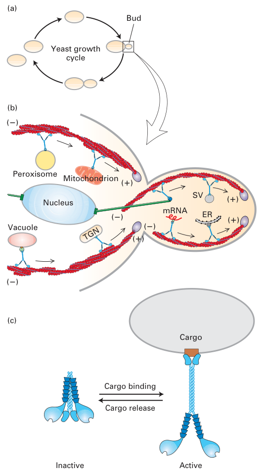
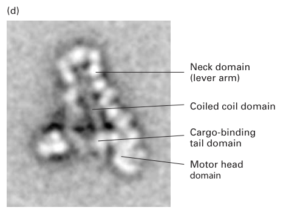
| Peroxisome | 过氧化物酶体 |
| Bud | 芽 |
| Nucleus | 细胞核 |
| Vacuole | 液泡 |
| mRNA | mRNA |
| ER | 内质网（ER） |
| SV | 分泌囊泡（SV） |
| TGN | 反面高尔基体网络（TGN） |
| Mitochondrion | 线粒体 |
| Cargo binding | 货物结合 |
| Cargo release | 货物释放 |
| Neck domain (lever arm) | 颈部结构域（杠杆臂） |
| Coiled coil domain | 卷曲螺旋结构域 |
| Cargo-binding tail domain | 货物结合尾部结构域 |
| Motor head domain | 马达头部结构域 |
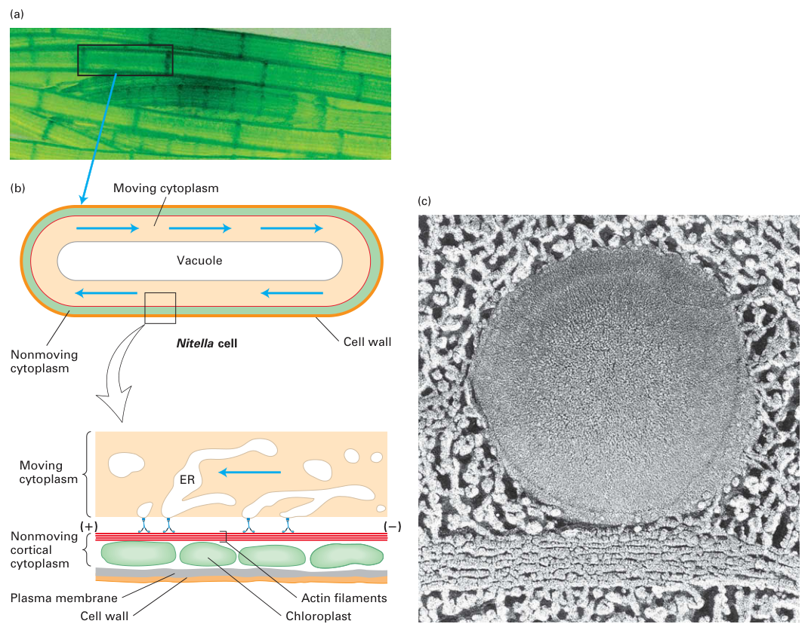
| Actin filaments | 肌动蛋白丝 |
| Chloroplast | 叶绿体 |
| Moving cytoplasm | 流动胞质 |
| ER | 内质网（ER） |
| Nonmoving cortical cytoplasm | 不流动的皮层胞质 |
| Nonmoving cytoplasm | 不流动的胞质 |
| Plasma membrane | 质膜 |
| Cell wall | 细胞壁 |
| Vacuole | 液泡 |
| Nitella cell | 丽藻细胞 |
肌球蛋白V最引人注目的用途或许见于大型绿藻，如丽藻（Nitella）和轮藻（Chara）。在夏季的池塘中可以很容易找到这些藻类，用简单的显微镜就能轻松观察到它们的运动。在它们可长达2 cm的大细胞中，胞质快速流动，速率接近每分钟4.5 mm，沿细胞内侧周缘无休止地循环（图17-38）。这种胞质流动是分配细胞代谢物的主要机制，尤其是在植物细胞和变形虫等大细胞中。藻类细胞具有沿细胞长度排列的肌动蛋白丝束，就位于靠近膜的静止叶绿体上方。大部分胞质由肌球蛋白V（在植物中也称为肌球蛋白XI）推动，它附着在紧邻肌动蛋白丝的内质网部分上。丽藻中胞质的流速约为任何其他已知肌球蛋白所产生运动的15倍。■
- 在骨骼肌中，收缩性肌原纤维由数千个称为肌节的重复单元组成。每个肌节由两种相互穿插的丝类型组成：肌球蛋白粗丝和肌动蛋白细丝（见图17-30）。
- 骨骼肌收缩涉及肌球蛋白粗丝沿肌动蛋白细丝的ATP依赖性滑行，从而缩短肌节，进而缩短肌原纤维（见图17-31）。
- 骨骼肌中肌动蛋白细丝的末端在(+)端由CapZ稳定，在(−)端由原肌球调节蛋白稳定。两种大蛋白——与细丝结合的伴肌动蛋白和与粗丝结合的肌联蛋白——也对骨骼肌的组织结构有贡献。
- 骨骼肌收缩受细丝调控。在游离Ca2+水平低时，原肌球蛋白阻断肌球蛋白与F-actin的相互作用，肌肉处于松弛状态。在游离Ca2+水平升高时，与原肌球蛋白结合的肌钙蛋白复合物结合Ca2+，并使原肌球蛋白移动，从而露出肌动蛋白上的肌球蛋白结合位点，允许收缩发生（见图17-34）。
- 平滑肌和非肌肉细胞具有由肌动蛋白丝和肌球蛋白丝组成的收缩束，其组织方式与骨骼肌相似，但有序性较差。
- 收缩束受粗丝调控。肌球蛋白轻链被肌球蛋白轻链激酶（MLCK）磷酸化，从而激活肌球蛋白并因此诱导收缩。当游离Ca2+浓度升高时，MLCK通过结合Ca2+-钙调蛋白而被激活（见图17-36）。
- 失活的肌球蛋白V通过与货物结合而被激活，随后它持续性地沿肌动蛋白丝运输货物。
17.7 细胞迁移：机制、信号转导与趋化性
我们已经考察了细胞用来产生运动的各种机制——从肌动蛋白丝的组装、肌动蛋白丝束和网络的形成，到肌动蛋白与肌球蛋白束的收缩，以及肌球蛋白分子沿肌动蛋白丝进行的细胞器运输。其中一些相同的机制构成了细胞产生迁移所需作用力的主要过程。细胞迁移源于细胞不同部位所产生的运动的协调，并与定向内吞循环相整合。
细胞迁移的研究对生物学和医学的许多领域都很重要。例如，动物发育的一个基本特征是特定细胞沿预定路径迁移。成年动物中的上皮细胞迁移以愈合伤口，白细胞则迁移到感染部位。不太明显的是肠上皮细胞沿肠道内绒毛的持续缓慢迁移，以及衬贴血管的内皮细胞的迁移。癌细胞脱离正常组织后的不当迁移会导致转移。
细胞迁移始于细胞前缘形成大而宽的膜突出物。视频显微镜显示，这种运动的一个主要特征是在膜处发生肌动蛋白聚合。前缘的肌动蛋白丝在突出区域中迅速交联成束和网络，在脊椎动物细胞中该区域称为片状伪足。在某些情况下，细长如手指的膜突起，即丝状伪足，也从前缘伸出。这些结构与细胞所越过的底面（如细胞外基质）形成稳定的接触。本节中，我们将更仔细地考察细胞如何协调各种基于微丝的过程与内吞作用，从而在表面上移动。我们还要考虑信号通路在协调和整合细胞骨架活动中的作用，这是当前研究的一个主要焦点。
细胞迁移协调力的产生与细胞黏附及膜回收
移动中的成纤维细胞（结缔组织细胞）表现出特征性的事件顺序：膜突出物最初伸出、附着到基质、胞质向前流动，以及细胞后部回缩（图17-39）。在成纤维细胞这类缓慢移动的细胞中，这些事件按有序的模式发生；但在巨噬细胞这类快速移动的细胞中，它们全都会以协调的方式同时发生。我们首先考察肌动蛋白细胞骨架在细胞运动中的作用，包括在前缘的组装以及通过应力纤维附着到基质（图17-40a、b），然后讨论内吞循环的作用。
膜延伸 前缘的肌动蛋白丝网络是一种细胞引擎，其推动膜向前的方式与肌动蛋白聚合推动李斯特菌的方式非常相似（图17-40d；关于李斯特菌，见图17-17c）。在前缘的膜处，肌动蛋白由活化的Arp2/3复合物成核，肌动蛋白丝通过在与质膜相邻的(+)端上装配而延伸。由于肌动蛋白网络相对于基质是固定的，因此随着肌动蛋白丝延伸，前端的膜被推出。这一过程与李斯特菌的运动非常相似——李斯特菌"骑"在正在聚合的肌动蛋白尾部上，该尾部同样固定在胞质内。与李斯特菌的彗尾一样，肌动蛋白的周转乃至踏车运动由前纤维蛋白和切丝蛋白的作用所介导（见图17-40d）。
细胞-基质黏附 当膜已经延伸、肌动蛋白网络已经组装完成之后，质膜就牢固地附着到基质上。延时显微镜观察显示，前缘的肌动蛋白束锚定到称为黏着斑的结构上（图17-40c）。这种附着有两个作用：防止片状伪足回缩，以及将细胞附着到基质上，使细胞能够向前移动。鉴于黏着斑及其调控在细胞运动中的重要性，发现它们富含参与信号转导通路的分子就不足为奇了。黏着斑将在第20章讨论细胞-基质相互作用时更详细地论述。
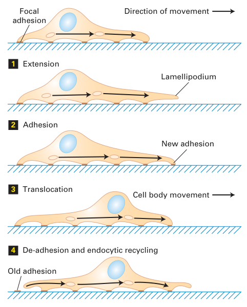
| De-adhesion and endocytic recycling | 去黏附与内吞回收 |
| Old adhesion | 旧黏附 |
| New adhesion | 新黏附 |
| Adhesion | 黏附 |
| Focal adhesion | 黏着斑 |
| Lamellipodium | 片状伪足 |
| Extension | 延伸 |
| Translocation | 移位 |
| Direction of movement | 运动方向 |
| Cell body movement | 细胞体移动 |
介导大多数细胞-基质相互作用的细胞黏附分子是称为整合素的膜蛋白。这些蛋白有一个与细胞外基质特定成分（如纤连蛋白和胶原蛋白）结合的胞外结构域，以及一个将它们连接到肌动蛋白细胞骨架的胞质结构域（见图17-40c和第20章）。细胞在前缘形成黏附，随着细胞向前迁移，这些黏附最终会处于靠近后部的位置。
细胞体移位 在前方的黏附形成之后，细胞体的大部分内容物向前移位（见图17-39，步骤3）。据认为，包埋在细胞骨架中的细胞核和其他细胞器是通过细胞后部肌球蛋白II依赖的皮层收缩被推向前方的，就像挤压牙膏管下半部分时牙膏被挤向前一样。与这一模型一致，肌球蛋白II定位于细胞后部的皮层。
解除细胞附着 最后，在运动的最后一步（去黏附）中，细胞后部的黏着斑被解除，整合素被回收，游离出来的尾部被带向前方。在光学显微镜下，常可见尾部从其连接处"啪"地松开——也许是通过尾部应力纤维的收缩，也许是通过弹性张力——它有时还会留下一点自己的膜，仍牢固地附着在基质上。
如果细胞与表面的附着过强或完全没有附着，细胞就不能移动。细胞移动的能力对应于细胞骨架产生的机械力与细胞黏附产生的阻力之间的平衡。这种关系可以通过测定表达不同水平整合素的细胞的移动速率来证明。此类测量表明，最快的迁移发生在中等黏附水平，移动速率在黏附水平过高或过低时都会下降。因此，细胞运动源于细胞施加在下方基质上的牵引力。
通过内吞作用回收膜和整合素 仅靠肌动蛋白细胞骨架的动态变化不足以驱动细胞迁移；它还依赖于膜的内吞回收。片状伪足延伸时所需的膜由内部内体经胞吐作用提供。细胞后部黏着斑中的黏附分子在这些黏着斑解组装时被内化，并通过内吞循环被运输到前方，以形成新的基质附着（图17-39，步骤4）。迁移细胞中黏附分子的这种循环类似于坦克利用履带向前行驶的方式。膜在细胞内部的移动还会在细胞表面产生向后的膜流。事实上，这类流动可能有助于细胞运动的力学，因为最近发现，白细胞在不附着于基质的情况下也能在液体中移动（"游动"），推测是表面结构像桨一样在细胞表面向后划动所致。
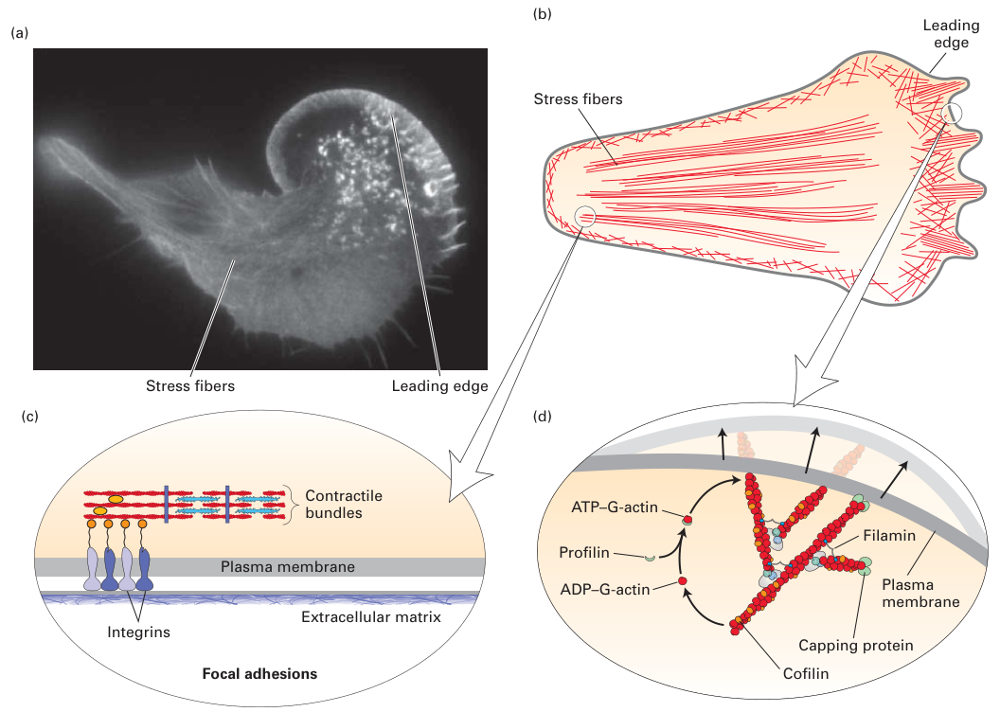
| Stress fibers | 应力纤维 |
| Leading edge | 前缘 |
| Cofilin | 切丝蛋白 |
| ADP-G-actin | ADP-G-肌动蛋白 |
| Profilin | 前纤维蛋白 |
| Capping protein | 加帽蛋白 |
| Plasma membrane | 质膜 |
| Filamin | 细丝蛋白 |
| ATP-G-actin | ATP-G-肌动蛋白 |
| Focal adhesions | 黏着斑 |
| Contractile bundles | 收缩束 |
| Extracellular matrix | 细胞外基质 |
| Integrins | 整合素 |
| Listeria | 李斯特菌 |
小GTP结合蛋白Cdc42、Rac和Rho控制肌动蛋白的组织
移动细胞的一个显著特征是其极性：它有前端和后端。当细胞转弯时，会在新的运动方向形成新的前缘。如果这些突出物同时向各个方向形成，细胞就无法选定新的运动方向。为了维持沿特定方向的运动，细胞需要信号来协调前端发生的事件与后端发生的事件，而且还需要信号来告诉细胞它的前端在哪里。我们对这种协调如何发生的认识来自对生长因子的研究。
生长因子，如表皮生长因子（EGF）和血小板衍生生长因子（PDGF），与细胞表面特定的受体结合（见第16章），并刺激细胞移动，然后分裂。例如，在伤口处，血液中的血小板因暴露于伤口边缘细胞外基质中的胶原蛋白而被激活，这有助于血液凝固。活化的血小板还分泌PDGF，吸引成纤维细胞和上皮细胞进入伤口并修复它。可以在体外观察这一过程的一部分。如果在培养皿中培养细胞，先让它们缺乏生长因子，然后加入一些新鲜生长因子，细胞会在一两分钟内作出反应，形成膜皱褶。膜皱褶与迁移细胞的片状伪足非常相似：它们是由控制内体胞吐的机制与肌动蛋白组装偶联后活化所致。
科学家们知道，生长因子与细胞表面非常特异的受体结合，并在质膜内表面诱导一条信号转导通路（见第15章），但这一过程如何与肌动蛋白机制联系起来却是个谜。随后的研究发现，该信号转导通路激活Rac，后者是Ras相关蛋白小GTP酶超家族的成员（见第15章）。Rac是调节微丝组织的一个蛋白家族的成员；另外两个成员是Cdc42和Rho。遗憾的是，由于它们被发现的历史原因，Cdc42、Rac和Rho所属的这个蛋白家族也被统称为"Rho蛋白"。要理解这些蛋白如何工作，我们首先必须回顾小GTP结合蛋白发挥功能的方式。
与Ras超家族的所有小GTP酶一样，Cdc42、Rac和Rho起分子开关的作用，在GDP结合状态下无活性，在GTP结合状态下有活性（图17-41）。在GDP结合状态下，它们以与称为鸟嘌呤核苷酸解离抑制剂（GDI）的蛋白结合的无活性形式游离于胞质中。生长因子可以结合并激活其受体，从而开启特定的膜结合调节蛋白，即鸟嘌呤核苷酸交换因子（GEF），后者通过将Rho蛋白从GDI上释放出来并催化GDP与GTP的交换，在膜处激活Rho蛋白。结合GTP的活性Rho蛋白与质膜结合，在膜上结合效应蛋白以传递生物学反应。小GTP酶保持活性，直到GTP被水解为GDP，这一过程由特异的GTP酶激活蛋白（GAP）所促进。
阐明Rho蛋白功能的一个重要方法，是把突变蛋白引入细胞，这些突变蛋白被锁定在活性状态——Rho-GTP——或无活性状态——Rho-GDP。锁定在活性状态的突变小GTP酶称为显性活性蛋白，它组成性地结合效应分子，这样就可以评估其生物学结果。另一种做法是引入一种不同的突变体，即显性负性突变体，它结合并抑制相关的GEF蛋白。因此，即使在存在内源性野生型蛋白的情况下，引入显性负性蛋白也会干扰信号转导通路，这样就可以评估哪些过程被阻断。
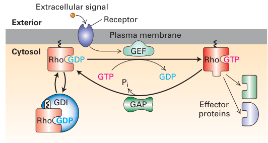
| Exterior | 外部 |
| Cytosol | 胞质 |
| Plasma membrane | 质膜 |
| Extracellular signal | 细胞外信号 |
| Receptor | 受体 |
| Rho | Rho |
| GTP | GTP |
| GDP | GDP |
| GDI | 鸟嘌呤核苷酸解离抑制剂（GDI） |
| GEF | 鸟嘌呤核苷酸交换因子（GEF） |
| GAP | GTP酶激活蛋白（GAP） |
| Effector proteins | 效应蛋白 |
Cdc42、Rac和Rho被认为参与微丝组织的调节，因为引入显性活性突变蛋白即使在没有生长因子的情况下也对肌动蛋白细胞骨架产生显著影响。研究发现，显性活性Cdc42导致丝状伪足出现，显性活性Rac导致膜皱褶出现，显性活性Rho导致应力纤维形成并随后收缩（图17-42）。如何判断显性活性Rac和生长因子刺激——两者都刺激膜皱褶形成——是否作用于同一条信号转导通路？如果生长因子刺激导致Rac活化，那么将显性负性Rac蛋白引入细胞应能阻断生长因子诱导膜皱褶形成的能力。事实正是如此。利用这一策略以及许多其他生化策略，科学家们鉴定出了涉及Cdc42、Rac和Rho的信号通路（图17-43）。
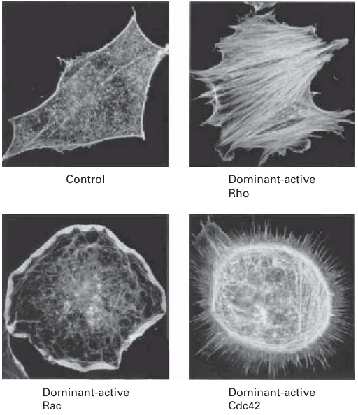
| Control | 对照 |
| Dominant-active Rac | 显性活性Rac |
| Dominant-active Rho | 显性活性Rho |
| Dominant-active Cdc42 | 显性活性Cdc42 |
这些蛋白所调节的某些通路中包含我们熟悉的蛋白。Cdc42的活化通过激活WASp——一种成核促进因子（NPF）——刺激Arp2/3介导的肌动蛋白组装（见图17-16），导致丝状伪足形成。Rac的活化也诱导Arp2/3，由WAVE复合物介导，导致前缘分支肌动蛋白丝的组装。Rho的活化至少有两种效应。第一，它可以激活形成蛋白（formin）以组装无分支的肌动蛋白丝。第二，通过激活Rho激酶，它可以使肌球蛋白轻链磷酸化，从而激活非肌肉肌球蛋白II，还可以通过磷酸化肌球蛋白轻链磷酸酶、抑制其活性来抑制轻链的去磷酸化。Rho激酶的这两种作用都导致肌球蛋白轻链磷酸化水平升高，因而肌球蛋白活性和收缩增强。如图17-43所示，这三种Rho蛋白——Cdc42、Rac和Rho——还通过活化和抑制通路相互联系。
细胞迁移涉及对Cdc42、Rac和Rho的协同调节
这些小的GTP结合蛋白各自如何参与细胞迁移的调节？为回答这一问题，研究人员开发了一种体外伤口愈合实验（图17-44a）。培养中的细胞在有生长因子的培养皿中生长，直至汇合并形成紧密的单层，此时它们停止分裂。然后用针刮划细胞单层，去除一条细胞带，产生一个含有游离细胞边缘的"伤口"。边缘的细胞感知到邻居的丢失，并响应培养皿表面新暴露的细胞外基质成分，移动以填满空的伤口区域（图17-44b）。为此，它们使自己朝向空区域，先伸出片状伪足，然后朝该方向移动。这样就可以在体外研究定向细胞迁移的诱导。
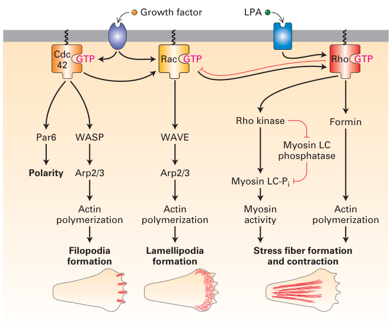
| Par6 | Par6 |
| WASP | WASP |
| Arp2/3 | Arp2/3复合物 |
| Filopodia formation | 丝状伪足形成 |
| Lamellipodia formation | 片状伪足形成 |
| WAVE | WAVE |
| Actin polymerization | 肌动蛋白聚合 |
| Rho kinase | Rho激酶 |
| Myosin LC-Pi | 肌球蛋白轻链-Pi |
| Myosin LC phosphatase | 肌球蛋白轻链磷酸酶 |
| Stress fiber formation and contraction | 应力纤维形成与收缩 |
| Formin | 形成蛋白（formin） |
| LPA | 溶血磷脂酸（LPA） |
| Growth factor | 生长因子 |
| Cdc42 | Cdc42 |
| Rac | Rac |
| Rho | Rho |
利用这种创伤细胞单层实验，研究人员将显性负性Rac引入伤口边缘的细胞，观察它如何影响细胞迁移和填充伤口的能力。由于Rac是Arp2/3复合物活化形成片状伪足所必需的，因此这些细胞不能形成该结构、不能迁移、伤口也就不能闭合，这并不令人意外（图17-44c）。当把显性负性Cdc42引入伤口边缘的细胞时，得到了一个非常有趣的结果：它们能形成片状伪足，但不能朝向正确的方向——事实上，它们试图向随机方向迁移。这一观察提示，Cdc42对调节细胞的整体极性至关重要。来自酵母（Cdc42最初就是在酵母中描述的）、创伤细胞单层、上皮细胞和神经元的研究表明，Cdc42是许多不同系统中极性的主控调节因子。在动物中，这种调节的一部分涉及Cdc42与其效应蛋白Par6的结合，Par6是一种极性蛋白，在线虫（最初发现Par6之处）、神经元和上皮细胞中发挥作用。我们将在第21章更详细地探讨这些极性通路。
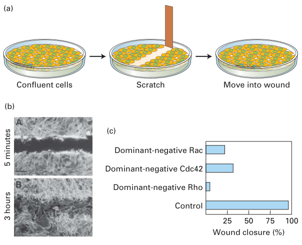
| Confluent cells | 汇合细胞 |
| Scratch | 划痕 |
| Move into wound | 移入伤口 |
| 5 minutes | 5分钟 |
| 3 hours | 3小时 |
| Control | 对照 |
| Dominant-negative Cdc42 | 显性负性Cdc42 |
| Dominant-negative Rac | 显性负性Rac |
| Dominant-negative Rho | 显性负性Rho |
| Wound closure (%) | 伤口闭合率（%） |
诸如此类的研究提示了一个关于细胞迁移如何被控制的一般模型（图17-45）。来自环境的信号传递给Cdc42，由它使细胞定向。定向的细胞在前端具有高Rac活性，诱导前缘形成；后端的Rho活性高，诱导收缩性结构的组装并激活基于肌球蛋白II的收缩机器。需要注意的是，细胞的不同区域可以具有不同水平的活性Cdc42、Rac或Rho，因此这些调节因子在细胞内部是局部受控的。这种空间调节的一部分之所以发生，是因为某些小G蛋白可以拮抗性地起作用。例如，活化的Rho可以刺激导致Rac失活的通路。这一过程可能有助于确保细胞后部不形成前缘结构。
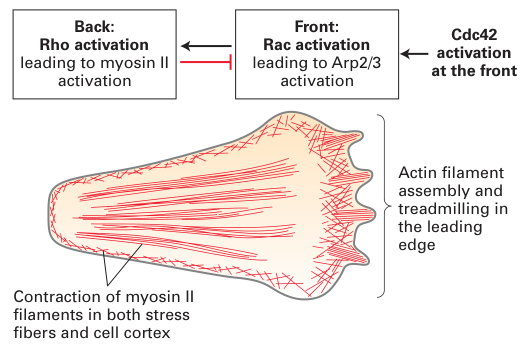
| Front: | 前部： |
| Back: | 后部： |
| Cdc42 activation at the front | 前端的Cdc42活化 |
| Rac activation | Rac活化 |
| Rho activation | Rho活化 |
| Arp2/3 activation | Arp2/3活化 |
| Myosin II activation | 肌球蛋白II活化 |
| Contraction of myosin II filaments | 肌球蛋白II丝的收缩 |
| Stress fibers | 应力纤维 |
| Actin filament assembly | 肌动蛋白丝组装 |
| Treadmilling | 踏车运动 |
| Leading edge | 前缘 |
迁移中的细胞受趋化分子引导
在某些条件下，细胞外的化学信号引导细胞沿特定方向运动。在某些情况下，运动由下方基质中的不溶性分子引导，如上述创伤细胞单层实验。在另一些情况下，细胞感知可溶性分子，并沿浓度梯度追随它们到其来源——这一过程称为趋化性。例如，白细胞由许多细菌细胞分泌的一种三肽引导到感染部位（图17-46）。再举一例，在骨骼肌发育过程中，一种称为散射因子的分泌性蛋白信号引导成肌细胞迁移到肢芽中的适当位置。研究得最透彻的趋化性例子之一是盘基网柄菌阿米巴在饥饿反应期间的迁移。当这些土壤阿米巴受到胁迫时，它们开始分泌cAMP，cAMP在该生物体中是细胞外趋化剂。其他盘基网柄菌细胞沿cAMP浓度梯度向上朝其来源移动（见图17-46）。于是这些阿米巴彼此靠近，聚集成一个迁移性蛞蝓体，然后分化成子实体，在其中形成抗饥饿的孢子。
尽管趋化分子多种多样——糖类、肽类、细胞代谢物、细胞壁或膜脂——它们都通过一个共同而熟悉的机制起作用：与细胞表面受体结合、激活细胞内信号通路，以及通过激活或抑制各种肌动蛋白结合蛋白来重塑细胞骨架。相当令人惊奇的是，仅仅细胞前后之间趋化分子浓度2%的差异就足以诱导定向细胞迁移（见经典实验17-2）。同样令人惊奇的是，尽管经过了近十亿年的进化，盘基网柄菌阿米巴与人白细胞在趋化性中使用的胞内信号转导通路却是保守的。
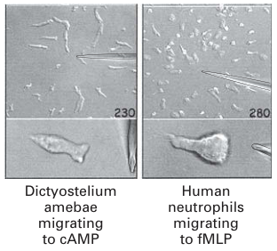
| Dictyostelium amebae | 盘基网柄菌阿米巴 |
| Human neutrophils | 人中性粒细胞 |
| cAMP | cAMP |
| fMLP | fMLP |
访问LaunchPad可获取学习工具并进一步了解本章内容：展望未来、经典实验17-1"观察肌肉收缩"、经典实验17-2"感知趋化梯度"、分析数据、扩展参考文献，以及包括视频、动画和测验在内的附加学习工具。
关键术语
复习题
- 1.大多数真核细胞中存在三种细胞骨架丝系统。请从组成、功能和结构三方面对它们进行比较。
- 2.肌动蛋白丝具有确切的极性。什么是丝极性？这种极性在亚基水平上是如何产生的？如何检测丝的极性？
- 3.在细胞中，肌动蛋白丝形成束或网络。细胞如何形成这类结构？具体是什么决定了肌动蛋白丝将形成束还是网络？
- 4.我们对细胞内肌动蛋白组装的认识，大多来自使用纯化肌动蛋白进行的体外实验。可以用哪些技术在体外研究肌动蛋白组装？请解释每一种技术的工作原理。这些技术中，哪一种能告诉你肌动蛋白丝的总质量是由许多短的肌动蛋白丝构成，还是由较少但较长的肌动蛋白丝构成？
- 5.细胞内肌动蛋白的主要存在形式是ATP–G-actin和ADP–F-actin。请解释核苷酸状态的相互转换如何与肌动蛋白亚基的组装和解聚相偶联。如果某个突变使肌动蛋白丧失结合ATP的能力，对肌动蛋白丝的组装/解聚会有什么后果？如果某个突变使肌动蛋白丧失水解ATP的能力，又会产生什么后果？
- 6.人们认为，爬行细胞前缘的肌动蛋白丝会发生踏车运动。什么是踏车运动？是什么造成了这种组装行为？
- 7.尽管纯化的肌动蛋白能在体外可逆地组装，但细胞内有多种肌动蛋白结合蛋白调控肌动蛋白丝的组装。如果分别把针对下列各个蛋白的功能阻断抗体显微注射进细胞，请预测细胞肌动蛋白骨架会发生什么变化：前纤维蛋白（profilin）、胸腺素β4、CapZ和Arp2/3复合物。
- 8.预测在CapZ、原肌球调节蛋白（tropomodulin）或前纤维蛋白（profilin）-肌动蛋白存在时，肌动蛋白在一条用肌球蛋白装饰的短肌动蛋白丝上（如图17-9所示）会如何聚合。
- 9.请比较和对比形成蛋白（formin）与WASp被激活的方式，并解释它们各自如何刺激肌动蛋白丝的形成。
- 10.肌球蛋白至少有20种不同类型。所有类型共有哪些性质？又是什么使它们彼此不同？为什么肌球蛋白II是唯一能产生收缩力的肌球蛋白？
- 11.借助配备适当的显微镜，可以观察到肌球蛋白沿肌动蛋白丝行走的能力。请描述这类实验通常是如何进行的。为什么这些实验需要ATP？如何用这类实验测定肌球蛋白的运动方向或肌球蛋白产生的力？
- 12.收缩束存在于非肌细胞中；这些结构的组织程度低于肌细胞的肌节。非肌细胞收缩束的用途是什么？收缩束中存在哪一类型的肌球蛋白？
- 13.肌球蛋白如何把ATP水解所释放的化学能转化为机械功？
- 14.肌球蛋白II的占空比为10%，其步长为8 nm。相比之下，肌球蛋白V的占空比高得多（约70%），沿肌动蛋白丝行走时每步36 nm。肌球蛋白II与肌球蛋白V之间的哪些差异造成了它们性质的不同？肌球蛋白II与肌球蛋白V在结构和性质上的差异如何反映它们在细胞中功能的不同？
- 15.骨骼肌和平滑肌的收缩都是由胞质溶胶中Ca2+浓度升高触发的。请比较这两种肌肉各自把Ca2+浓度升高转化为收缩的机制。
- 16.蛋白激酶A（PKA）对肌球蛋白轻链激酶（MLC kinase）的磷酸化，会抑制Ca2+/钙调蛋白对MLC激酶的激活。沙丁胺醇等药物与β肾上腺素能受体结合，引起细胞内cAMP升高并激活PKA。请解释为什么沙丁胺醇可用于治疗哮喘发作时气道周围平滑肌细胞的严重收缩。
- 17.若干类型的细胞利用肌动蛋白骨架来驱动其在表面上的运动。不同组装形式的肌动蛋白丝如何参与这种运动？
- 18.为了朝特定方向移动，迁移细胞必须利用胞外信号来确定细胞的哪一部分充当前端、哪一部分充当后端。请描述小GTP酶蛋白看来如何参与迁移细胞用于确定运动方向的信号通路。
- 19.细胞运动曾被比作坦克履带的运动。在前缘，肌动蛋白丝迅速组装成束和网络，形成突出物并推动细胞前进。在后缘，细胞黏附被断开，细胞尾端被带向前方。是什么为移动中的细胞提供牵引力？细胞体的转位是如何发生的？细胞向前移动时，细胞黏附是如何被解除的？
参考文献
微丝与肌动蛋白结构
Holmes, K. C., et al. 1990. Atomic model of the actin filament. Nature347:44–49.
Kabsch, W., et al. 1990. Atomic structure of the actin:DNase I complex. Nature347:37–44.
Pollard, T. D., and J. A. Cooper. 2009. Actin, a central player in cell shape and movement. Science 326:1208–1212.
肌动蛋白丝的动态变化
Paavilainen, V. O., et al. 2004. Regulation of cytoskeletal dynam- ics by actin-monomer-binding proteins. Trends Cell Biol.14:386–394.
Theriot, J. A. 1997. Accelerating on a treadmill: ADF/cofilin promotes rapid actin filament turnover in the dynamic cytoskeleton. J. Cell Biol.136:1165–1168.
肌动蛋白丝组装与解聚的机制
Brieher, W. 2013. Mechanisms of actin disassembly. Mol. Biol. Cell24:2299–2302.
Campellone, K. G., and M. D. Welch. 2010. A nucleator arms race: cellular control of actin assembly. Nature Rev. Mol. Cell Biol. 11:237–251.
Chen, B. et al. 2014. The WAVE regulatory complex links diverse receptors to the actin cytoskeleton. Cell 156:195–207.
Gouin, E., M. D. Welch, and P. Cossart. 2005. Actin-based motility of intracellular pathogens. Curr. Opin. Microbiol.8:35–45.
Rotty, J. D., C. Wu, and J. E. Bear. 2013. New insights into the regulation and cellular functions of the Arp2/3 complex. Nature Rev. Mol. Cell Biol.14:7–12.
基于肌动蛋白的细胞结构的组织
Bennett, V., and D. N. Lorenzo. 2013. Spectrin- and ankyrin- based membrane domains and the evolution of vertebrates. Curr. Top. Memb. 72:1–37.
Fehon, R. G., A. I. McClatchey, and A. Bretscher. 2010. Orga- nizing the cell cortex: the role of ERM proteins. Nature Rev. Mol. Cell Biol. 11:276–287.
肌球蛋白：基于肌动蛋白的马达蛋白
Berg, J. S., B. C. Powell, and R. E. Cheney. 2001. A millennial myosin census. Mol. Biol. Cell12:780–794.
Vale, R. D. 2003. The molecular motor toolbox for intracellular transport. Cell112:467–480.
Vale, R. D., and R. A. Milligan. 2000. The way things move: looking under the hood of molecular motor proteins. Science 288:88–95.
肌球蛋白驱动的运动
Clark, K. A., et al. 2002. Striated muscle cytoarchitecture: an intricate web of form and function. Ann. Rev. Cell Dev. Biol. 18:637–706.
Hammer, J. A. III and J. R. Sellers. 2012. Walking to work: roles for class V myosins as cargo transporters. Nature Rev. Mol. Cell Biol. 13:13–26.
细胞迁移：信号转导与趋化性
Artemenko, Y., T. J. Lampert, and P. N. Devreotes. 2014. Moving towards a paradigm: common mechanisms of chemotactic signaling in Dictyostelium and mammalian leukocytes. Cell Mol. Life Sci.71:3711–3747.
Etienne-Manneville, S. 2004. Cdc42—the centre of polarity. J. Cell Sci.117:1291–1300.
Etienne-Manneville, S., and A. Hall. 2002. Rho GTPases in cell biology. Nature420:629–635.
Pollard, T. D., and G. G. Borisy. 2003. Cellular motility driven by assembly and disassembly of actin filaments. Cell112:453–465.
Ridley, A. J., et al. 2003. Cell migration: integrating signals from the front to back. Science302:1704–1709.